Map Methods Events
지도 객체
Constructor
kakao.maps.Map(container, options)
지도를 생성한다.
지도 생성하기 샘플보기
var container = document.getElementById('map'),
options = {
center: new kakao.maps.LatLng(33.450701, 126.570667),
level: 3
};
var map = new kakao.maps.Map(container, options);Parameters
containerNode : 지도가 표시될 HTML elementoptionsObjectcenterLatLng : 중심 좌표 (필수)levelNumber : 확대 수준 (기본값: 3)mapTypeIdMapTypeId : 지도 종류 (기본값: 일반 지도)draggableBoolean : 마우스 드래그, 휠, 모바일 터치를 이용한 시점 변경(이동, 확대, 축소) 가능 여부scrollwheelBoolean : 마우스 휠, 모바일 터치를 이용한 확대 및 축소 가능 여부disableDoubleClickBoolean : 더블클릭 이벤트 및 더블클릭 확대 가능 여부disableDoubleClickZoomBoolean : 더블클릭 확대 가능 여부projectionIdString : 투영법 지정 (기본값: kakao.maps.ProjectionId.WCONG)tileAnimationBoolean : 지도 타일 애니메이션 설정 여부 (기본값: true)keyboardShortcutsBoolean | Object : 키보드의 방향키와 +, – 키로 지도 이동,확대,축소 가능 여부 (기본값: false)speedNumber : 지도 이동 속도
Methods
setCenter(latlng)
지도의 중심 좌표를 설정한다.
지도 이동시키기 샘플보기
map.setCenter(new kakao.maps.LatLng(37.537183, 127.005454));Parameters
latlngLatLng
getCenter()
지도의 중심 좌표를 반환한다.
지도 정보 얻어오기 샘플보기
var position = map.getCenter();Returns
setLevel(level, options)
지도의 확대 수준을 설정한다.
MapTypeId 의 종류에 따라 설정 범위가 다르다.
SKYVIEW, HYBRID 일 경우 0 ~ 14, ROADMAP 일 경우 1 ~ 14.
지도 레벨바꾸기 샘플보기
// 지도 레벨을 4로 설정한다
map.setLevel(4);
// 지도 레벨을 4로 설정하고 특정 좌표를 기준으로 확대 또는 축소되도록 한다
map.setLevel(4, {anchor: new kakao.maps.LatLng(33.450705, 126.570677)});
// setLevel 시 애니메이션 효과 옵션 설정, 기본지속시간은 300ms이다
map.setLevel(4, {animate: true});
// setLevel 시 애니메이션 효과의 지속시간을 500ms로 설정
map.setLevel(4, {
animate: {
duration: 500
}
});Parameters
levelNumberoptionsObjectanimateBoolean | Object : 지도 확대수준 변경 시 애니메이션 효과 여부 (현재 지도 레벨과의 차이가 2 이하인 경우에만 애니메이션 효과 가능)durationNumber : 애니메이션 효과 지속 시간 (단위: ms)
anchorLatLng : 지도 확대수준 변경 시 기준 좌표
getLevel()
지도의 확대 수준을 반환한다.
지도 정보 얻어오기 샘플보기
var level = map.getLevel();Returns
- Number
setMapTypeId(mapTypeId)
지도의 타입을 설정한다.
지도 타입 바꾸기1 샘플보기
지도 타입 바꾸기2 샘플보기
map.setMapTypeId(kakao.maps.MapTypeId.HYBRID);Parameters
mapTypeIdMapTypeId
getMapTypeId()
지도의 타입을 반환한다.
지도 정보 얻어오기 샘플보기
map.getMapTypeId(); // kakao.maps.MapTypeId.ROADMAPReturns
setBounds(bounds[, paddingTop, paddingRight, paddingBottom, paddingLeft])
주어진 영역이 화면 안에 전부 나타날 수 있도록 지도의 중심 좌표와 확대 수준을 설정한다.
주어진 영역외에 추가로 padding값을 지정할 수 있다. 2번째 파라메터부터 top, right, bottom, left값이며
파라메터를 1개 이상 지정한 경우 지정하지 않은 파라메터에 대해서는 CSS의 padding rule을 따른다.
(ex. paddingTop:100, paddingRight:50 을 지정한 경우. top, right, bottom, left 순서로 100 50 100 50)
padding값을 지정하지 않으면 기본값으로 상하좌우 32가 적용된다.
지도 범위 재설정 하기 샘플보기
map.setBounds(bounds);Parameters
boundsLatLngBoundspaddingTopNumberpaddingRightNumberpaddingBottomNumberpaddingLeftNumber
getBounds()
지도의 영역을 반환한다.
지도 정보 얻어오기 샘플보기
var bounds = map.getBounds();
bounds.toString(); // "((33.44843745687413, 126.56798357402302), (33.452964008206735, 126.57333898904454))"
Returns
setMinLevel(minLevel)
지도의 최저 레벨 값을 설정한다.
기본적으로 레벨 값이 작을수록 지도는 확대되는데
이 함수로 설정한 레벨까지만 확대할 수 있게 된다.
map.setMinLevel(3);Parameters
minLevelNumber
setMaxLevel(maxLevel)
지도의 최고 레벨 값을 설정한다.
기본적으로 레벨 값이 클수록 지도는 축소되는데
이 함수로 설정한 레벨까지만 축소할 수 있게 된다.
map.setMaxLevel(10);Parameters
maxLevelNumber
panBy(dx, dy)
중심 좌표를 지정한 픽셀 만큼 부드럽게 이동한다.
만약 이동할 거리가 지도 화면의 크기보다 클 경우 애니메이션 없이 이동한다.
map.panBy(100, 50);Parameters
dxNumberdyNumber
panTo(latlng_or_bounds[, padding])
중심 좌표를 지정한 좌표 또는 영역으로 부드럽게 이동한다. 필요하면 확대 또는 축소도 수행한다.
만약 이동할 거리가 지도 화면의 크기보다 클 경우 애니메이션 없이 이동한다.
padding 만큼 제외하고 영역을 계산하며, padding 을 지정하지 않으면 기본값으로 32가 사용된다.
지도 이동시키기 샘플보기
var moveLatLng = new kakao.maps.LatLng(33.450580, 126.574942);
map.panTo(moveLatLng);Parameters
latlng_or_boundsLatLng | LatLngBoundspaddingNumber
addControl(control, position)
지도에 컨트롤을 추가한다.
지도에 컨트롤 올리기 샘플보기
var control = new kakao.maps.ZoomControl();
map.addControl(control, kakao.maps.ControlPosition.TOPRIGHT); Parameters
controlMapTypeControl | ZoomControlpositionControlPosition
removeControl(control)
지도에서 컨트롤을 제거한다.
map.removeControl(control, kakao.maps.ControlPosition.TOPRIGHT);Parameters
controlMapTypeControl | ZoomControl
setDraggable(draggable)
마우스 드래그와 모바일 터치를 이용한 지도 이동 가능 여부를 설정한다.
지도 이동 막기 샘플보기
map.setDraggable(false);Parameters
draggableBoolean
getDraggable()
마우스 드래그와 모바일 터치를 이용한 지도 이동 가능 여부를 반환한다.
// 지도가 드래그로 이동이 가능한 상태면 true, 아니면 false를 반환한다.
map.getDraggable();Returns
- Boolean
setZoomable(zoomable)
마우스 휠과 모바일 터치를 이용한 지도 확대, 축소 가능 여부를 설정한다.
지도 객체 함수 호출을 통한 확대, 축소는 동작한다.
지도 확대 축소 막기 샘플보기
// 지도의 마우스 휠, 모바일 터치를 이용한 확대, 축소 기능을 막는다.
map.setZoomable(false);
// 지도 객체 함수 호출을 통한 확대, 축소는 동작한다.
map.setLevel(3);Parameters
zoomableBoolean
getZoomable()
마우스 휠과 모바일 터치를 이용한 지도 확대, 축소 가능 여부를 반환한다.
// 지도가 마우스 휠과 모바일 터치를 이용해 확대, 축소가 가능한 상태이면 true, 아니면 false를 반환한다.
map.getZoomable();Returns
- Boolean
setProjectionId(projectionId)
지도의 projectionId를 지정한다.
이 메소드로 API 내부의 좌표계의 투영 방법을 설정할 수 있다.
기본값은 kakao.maps.ProjectionId.WCONG
// API 내부의 좌표게가 특정 투영법을 사용하지 않도록 할 경우.
map.setProjectionId(kakao.maps.ProjectionId.NONE);Parameters
projectionIdProjectionId
getProjectionId()
지도의 projectionId를 반환한다.
map.getProjectionId();Returns
relayout()
지도를 표시하는 HTML elemente의 크기를 변경한 후에는 반드시 이 함수를 호출해야 한다.
단, window의 resize 이벤트에 대해서는 자동으로 호출한다.
지도 영역 크기 동적 변경하기 샘플보기
var container = document.getElementById('map'),
options = {
center: new kakao.maps.LatLng(33.450701, 126.570667),
level: 3
};
var map = new kakao.maps.Map(container, options);
container.style.width = '1200px';
container.style.height = '800px';
map.relayout();addOverlayMapTypeId(mapTypeId)
지도에 로드뷰, 교통정보 등의 오버레이 타입의 타일 이미지를 올린다.
로드뷰 타일 이미지를 추가할 경우 RoadviewOverlay 와 동일한 기능을 수행한다.
지도에 교통정보 표시하기 샘플보기
지도에 로드뷰 도로 표시하기 샘플보기
지도에 지형도 표시하기 샘플보기
map.addOverlayMapTypeId(kakao.maps.MapTypeId.TRAFFIC);Parameters
mapTypeIdMapTypeId
removeOverlayMapTypeId(mapTypeId)
지도에 로드뷰, 교통정보 등의 오버레이 타입의 타일 이미지를 삭제한다.
map.removeOverlayMapTypeId(kakao.maps.MapTypeId.TRAFFIC);Parameters
mapTypeIdMapTypeId
setKeyboardShortcuts(active)
키보드의 방향키와 +,-키로 지도 이동,확대,축소 가능여부를 설정한다.
// 키보드로 지도를 조작할 수 없도록 설정한다
map.setKeyboardShortcuts(false);Parameters
activeBoolean
getKeyboardShortcuts()
키보드의 방향키와 +,-키로 지도 이동,확대,축소 가능여부를 반환한다.
// true를 반환하면 현재 지도를 키보드로 조작할 수 있는 상태이다
map.getKeyboardShortcuts();Returns
- Boolean
setCopyrightPosition(copyrightPosition[, reversed])
copyright의 위치를 설정한다
// copyright의 위치를 오른쪽 아래로 설정하고, 로고와의 위치를 반전시킨다
// 실행 결과는 아래 이미지와 같다
map.setCopyrightPosition(kakao.maps.CopyrightPosition.BOTTOMRIGHT, true);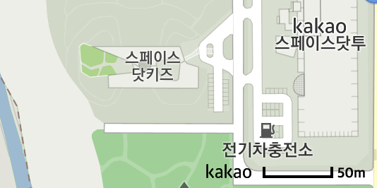
Parameters
copyrightPositionCopyrightPositionreversedBoolean
getProjection()
지도의 좌표 변환 객체를 반환한다.
var proj = map.getProjection();Returns
setCursor(style)
지도 위에 마우스 커서가 위치할 경우 보여지는 커서의 스타일을 지정한다.
// 커서 스타일을 'move'로 변경한다.
map.setCursor('move');
// URL 형태로도 설정 가능하다.
map.setCursor('url(/cursor.ico), default' :Parameters
styleString
Events
center_changed
중심 좌표가 변경되면 발생한다.
중심좌표 변경 이벤트 등록하기 샘플보기
kakao.maps.event.addListener(map, 'center_changed', function() {
alert('center changed!');
});zoom_start
확대 수준이 변경되기 직전 발생한다.
kakao.maps.event.addListener(map, 'zoom_start', function() {
alert('Map is going to zoom!');
});zoom_changed
확대 수준이 변경되면 발생한다.
확대, 축소 이벤트 등록하기 샘플보기
kakao.maps.event.addListener(map, 'zoom_changed', function() {
alert('zoom changed!');
});bounds_changed
지도 영역이 변경되면 발생한다.
영역 변경 이벤트 등록하기 샘플보기
kakao.maps.event.addListener(map, 'bounds_changed', function() {
alert('bounds changed!');
});click
지도를 클릭하면 발생한다.
클릭 이벤트 등록하기 샘플보기
클릭한 위치에 마커 표시하기 샘플보기
kakao.maps.event.addListener(map, 'click', function(mouseEvent) {
var latlng = mouseEvent.latLng;
alert('click! ' + latlng.toString());
});
Arguments
dblclick
지도를 더블클릭하면 발생한다.
kakao.maps.event.addListener(map, 'dblclick', function(mouseEvent) {
var latlng = mouseEvent.latLng;
alert('double click! ' + latlng.toString());
});Arguments
rightclick
지도를 마우스 오른쪽 버튼으로 클릭하면 발생한다.
kakao.maps.event.addListener(map, 'rightclick', function(mouseEvent) {
var latlng = mouseEvent.latLng;
alert('right click! ' + latlng.toString());
});Arguments
mousemove
지도에서 마우스 커서를 이동하면 발생한다.
kakao.maps.event.addListener(map, 'mousemove', function(mouseEvent) {
// do something
});Arguments
dragstart
드래그를 시작할 때 발생한다.
kakao.maps.event.addListener(map, 'dragstart', function() {
// do something
});drag
드래그를 하는 동안 발생한다.
kakao.maps.event.addListener(map, 'drag', function() {
// do something
});dragend
드래그가 끝날 때 발생한다.
kakao.maps.event.addListener(map, 'dragend', function() {
// do something
});idle
중심 좌표나 확대 수준이 변경되면 발생한다.
단, 애니메이션 도중에는 발생하지 않는다.
kakao.maps.event.addListener(map, 'idle', function() {
// do something
});tilesloaded
확대수준이 변경되거나 지도가 이동했을때 타일 이미지 로드가 모두 완료되면 발생한다.
지도이동이 미세하기 일어나 타일 이미지 로드가 일어나지 않은경우 발생하지 않는다.
타일로드 이벤트 등록하기 샘플보기
kakao.maps.event.addListener(map, 'tilesloaded', function() {
// do something
});maptypeid_changed
지도 기본 타일(일반지도, 스카이뷰, 하이브리드)이 변경되면 발생한다.
kakao.maps.event.addListener(map, 'maptypeid_changed', function() {
// do something
});
MapTypeControl
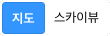
일반 지도/하이브리드 간 지도 타입 전환 컨트롤을 생성한다.
Map 객체의 addControl 또는 removeControl 메소드의 인자로 사용된다.
현재는 일반 지도/하이브리드 간 전환 컨트롤만 지원되며 다른 지도 타입을 제어하는 컨트롤이 필요할 경우에는 직접 구현해야 한다.
지도에 컨트롤 올리기 샘플보기
Constructor
kakao.maps.MapTypeControl()
var mapTypeControl = new kakao.maps.MapTypeControl();
// 지도 오른쪽 위에 지도 타입 컨트롤이 표시되도록 지도에 컨트롤을 추가한다.
map.addControl(mapTypeControl, kakao.maps.ControlPosition.TOPRIGHT);ZoomControl
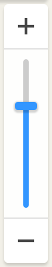
주어진 객체로 확대·축소 컨트롤을 생성한다.
Map 객체의 addControl 또는 removeControl 메소드의 인자로 사용된다.
지도에 컨트롤 올리기 샘플보기
Constructor
kakao.maps.ZoomControl()
// 아래와 같이 옵션을 입력하지 않아도 된다
var zoomControl = new kakao.maps.ZoomControl();
// 지도 오른쪽에 줌 컨트롤이 표시되도록 지도에 컨트롤을 추가한다.
map.addControl(zoomControl, kakao.maps.ControlPosition.RIGHT);MapTypeId
kakao.maps.MapTypeId 객체
Constants
kakao.maps.MapTypeId.MAP_TYPE_ID
지도의 타입이 상수 값으로 정의되어 있다.MAP_TYPE_ID 값으로 사용 가능한 목록은 다음과 같다.
ROADMAP: 일반 지도
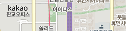SKYVIEW: 스카이뷰
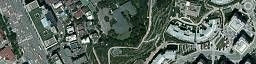HYBRID: 하이브리드(스카이뷰 + 레이블)
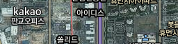ROADVIEW: 로드뷰
OVERLAY: 레이블
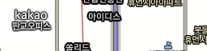TRAFFIC: 교통정보
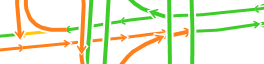TERRAIN: 지형도BICYCLE: 자전거
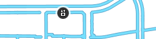BICYCLE_HYBRID: 스카이뷰를 위한 자전거 (어두운 지도에서 활용)
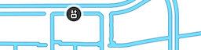USE_DISTRICT: 지적편집도
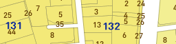
지도의 타입은 용도에 따라 두 가지로 분류한다.
베이스 타입 : ROADMAP SKYVIEW HYBRID
오버레이 타입 : OVERLAY TERRAIN TRAFFIC BICYCLE BICYCLE_HYBRID USE_DISTRICT
기본 타일은 베이스 타입 을 사용한다.
Map.setMapTypeId 함수를 통해 지정 가능하다.
기본 타일 위에 얹는 타일은 오버레이 타입 을 사용한다.
Map.addOverlayMapTypeId 함수를 통해 지정한 타일을 지도 위에 올릴 수 있다.
그리고 Map.removeOverlayMapTypeId 함수로 언제든 올렸던 오버레이 타일을 걷어낼 수도 있다.
지적편집도 오버레이 타입은 현행 지적 정보와 일치하지 않을 수 있으며 참고 이외의 용도로 사용하실 수 없습니다.
지도 타입 바꾸기1 샘플보기
지도 타입 바꾸기2 샘플보기
ProjectionId
kakao.maps.ProjectionId 객체
Constants
kakao.maps.ProjectionId.PROJECTION_ID
지도의 projectionId 값이 상수 값으로 정의되어 있다.PROJECTION_ID 값으로 사용 가능한 목록은 다음과 같다.
NONE: 투영 없는 API 내부의 좌표계 자체. left-bottom을 (0,0)으로 하는 픽셀단위의 좌표계.WCONG: API 내부 좌표계를 WCongnamul좌표계로 투영. 외부에서 WCongnamul 좌표를 받아 사용가능.
ControlPosition
kakao.maps.ControlPosition 객체
Contstants
kakao.maps.ControlPosition.CONTROL_POSITION
컨트롤 위치가 상수 값으로 정의되어 있다.CONTROL_POSITION 값으로 사용 가능한 목록은 다음과 같다.
TOP: 위 가운데를 의미한다. 아래로 쌓인다.TOPLEFT: 왼쪽 위를 의미한다. 오른쪽으로 쌓인다.TOPRIGHT: 오른쪽 위를 의미한다. 왼쪽으로 쌓인다.LEFT: 왼쪽 위를 의미한다. 아래로 쌓인다. (주의: 왼쪽 중앙을 의미하는 것이 아니다.)RIGHT: 오른쪽 위를 의미한다. 아래로 쌓인다. (주의: 오른쪽 중앙을 의미하는 것이 아니다.)BOTTOMLEFT: 왼쪽 아래를 의미한다. 오른쪽으로 쌓인다.BOTTOM: 아래 가운데를 의미한다. 위로 쌓인다.BOTTOMRIGHT: 오른쪽 아래를 의미한다. 왼쪽으로 쌓인다.
다음과 같이 접근한다.kakao.maps.ControlPosition.TOPLEFT;
CopyrightPosition
kakao.maps.CopyrightPosition 객체
Contstants
kakao.maps.CopyrightPosition.COPYRIGHT_POSITION
copyright의 위치가 상수값으로 정의되어 있다.COPYRIGHT_POSITION 값으로 사용 가능한 목록은 다음과 같다.
BOTTOMLEFT: 왼쪽 아래를 의미한다.BOTTOMRIGHT: 오른쪽 아래를 의미한다.
다음과 같이 접근한다.kakao.maps.CopyrightPosition.BOTTOMRIGHT;
Tileset Static Methods
주어진 객체로 타일셋을 생성한다.
커스텀 타일셋1 샘플보기
커스텀 타일셋2 샘플보기
Constructor
kakao.maps.Tileset(width, height, urlFunc, copyright, dark, minZoom, maxZoom)
var tileset =
new kakao.maps.Tileset(256, 256, function(x, y, z) {
/**
* x: column
* y: row
* z: level
**/
// 세 parameter를 조합하여 타일 주소를 조합/반환한다.
return 'http://return.tile.image.url/' + z + '/' + y + '/' + x + '.png';
}, [], false, 2, 5);Parameters
widthNumber : 타일의 가로 크기heightNumber : 타일의 세로 크기urlFuncFunction : 타일 주소를 반환하는 함수. 세 개의 파라메터를 가진다.copyrightArray.<TilesetCopyright> : 생성할 타일의 카피라이트(기본값: [])darkBoolean : 어두운 타일인지 여부minZoomNumber : 최소 레벨maxZoomNumber : 최대 레벨getTileFunction : 타일 Element를 반환하는 함수. 세개의 파라미터를 가진다. urlFunc 옵션 대신 사용한다.
Static Methods
add(id, tileset)
타일셋에 ID를 지정해 추가한다.
추가되면 kakao.maps.[지정한ID] 로 타일셋을 사용할 수 있다.
Parameters
idString : 지정할 타일셋의 IDtilesetTileset : 생성한 Tileset 객체
kakao.maps.Tileset.add('SAMPLE', tileset); // kakao.maps.MapTypeId.SAMPLE
var map = kakao.maps.Map(container, options);
map.setMapTypeId(kakao.maps.MapTypeId.SAMPLE);TilesetCopyright
주어진 객체로 타일셋 카피라이트를 생성한다.
Constructor
kakao.maps.TilesetCopyright(msg, shortMsg, minZoom)
var copyright = new kakao.maps.TilesetCopyright('Nasa', 'Nasa', 9);Parameters
msgString : 기본적으로 출력되는 카피라이트shortMsgString : 지도 영역이 작아졌을 때 출력되는 짧은 카피라이트minZoomNumber : 해당 카피라이트가 노출될 최소 줌 레벨(기본값: 0)
Coords Methods
Wcongnamul 좌표 정보를 가지고 있는 객체를 생성한다.
Constructor
kakao.maps.Coords(x, y)
var coords = new kakao.maps.Coords(400207.5, -11710);Parameters
xNumber : x 좌표yNumber : y 좌표
Methods
getX()
x 좌표를 반환한다.
var coords = new kakao.maps.Coords(400207.5, -11710);
coords.getX(); // 400207.5 Returns
- Number
getY()
y 좌표를 반환한다.
var coords = new kakao.maps.Coords(400207.5, -11710);
coords.getY(); // -11710 Returns
- Number
equals(coords)
객체가 가지고 있는 좌표와 같은 좌표를 가지고 있는 객체인지 비교한다.
var coords = new kakao.maps.Coords(400207.5, -11710),
coords1 = new kakao.maps.Coords(400207.5, -11710),
coords2 = new kakao.maps.Coords(400207, 11710);
coords.equals(coords1); // true
coords.equals(coords2); // falseParameters
coordsCoords
Returns
- Boolean
toString()
객체가 가지고 있는 좌표를 문자열로 반환한다.
var coords = new kakao.maps.Coords(400207.5, -11710);
coords.toString(); // (400207.5, -11710)Returns
- String
toLatLng()
객체가 가지고 있는 좌표를 WGS84 좌표로 반환한다.var coords = new kakao.maps.Coords(400207.5, -11710);
coords.toLatLng().toString(); // (33.45067375096625, 126.5706721005115)
Returns
LatLng Methods
WGS84 좌표 정보를 가지고 있는 객체를 생성한다.
Constructor
kakao.maps.LatLng(latitude, longitude)
var latlng = new kakao.maps.LatLng(37, 127);Parameters
latitudeNumber : 위도longitudeNumber : 경도
Methods
getLat()
위도를 반환한다.
var latlng = new kakao.maps.LatLng(37, 127);
latlng.getLat(); // 37Returns
- Number
getLng()
경도를 반환한다.
var latlng = new kakao.maps.LatLng(37, 127);
latlng.getLng(); // 127Returns
- Number
equals(latlng)
객체가 가지고 있는 좌표와 같은 좌표를 가지고 있는 객체인지 비교한다.
var latlng = new kakao.maps.LatLng(37.1, 127.1),
latlng1 = new kakao.maps.LatLng(37.1, 127.1),
latlng2 = new kakao.maps.LatLng(37.2, 127.2);
latlng.equals(latlng1); // true
latlng.equals(latlng2); // falseParameters
latlngLatLng
Returns
- Boolean
toString()
객체가 가지고 있는 좌표를 문자열로 반환한다.
var latlng = new kakao.maps.LatLng(37, 127);
latlng.toString(); // "(37, 127)"Returns
- String
toCoords()
객체가 가지고 있는 좌표를 Wcongnamul 좌표로 반환한다.
var latlng = new kakao.maps.LatLng(37, 127);
latlng.toCoords().toString(); // "(500000, 972532.3892234056)"Returns
LatLngBounds Methods
WGS84 좌표계에서 사각영역 정보를 표현하는 객체를 생성한다.
지도 범위 재설정 하기 샘플보기
Constructor
kakao.maps.LatLngBounds(sw, ne)
var sw = new kakao.maps.LatLng(36, 127),
ne = new kakao.maps.LatLng(37, 128);
var bounds = new kakao.maps.LatLngBounds(sw, ne); // 인자를 주지 않으면 빈 영역을 생성한다.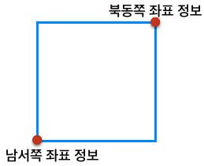
Parameters
Methods
equals(latlngBounds)
객체가 가지고 있는 영역 정보와 같은 영역 정보를 가지고 있는 객체인지 비교한다.
var sw = new kakao.maps.LatLng(36, 127),
ne = new kakao.maps.LatLng(37, 128),
lb = new kakao.maps.LatLngBounds(sw, ne),
lb1 = new kakao.maps.LatLngBounds(sw, ne),
lb2 = new kakao.maps.LatLngBounds();
lb.equals(lb1); // true
lb.equals(lb2); // falseParameters
latlngBoundsLatLngBounds
Returns
- Boolean
toString()
객체가 가지고 있는 영역 정보를 문자열로 반환한다.
var sw = new kakao.maps.LatLng(36, 127),
ne = new kakao.maps.LatLng(37, 128),
lb = new kakao.maps.LatLngBounds(sw, ne);
lb.toString(); // "((36, 127), (37, 128))"Returns
- String
getSouthWest()
영역의 남서쪽 좌표를 반환한다.
var sw = new kakao.maps.LatLng(36, 127),
ne = new kakao.maps.LatLng(37, 128),
lb = new kakao.maps.LatLngBounds(sw, ne);
lb.getSouthWest().toString(); // "(36, 127)"Returns
getNorthEast()
영역의 북동쪽 좌표를 반환한다.
var sw = new kakao.maps.LatLng(36, 127),
ne = new kakao.maps.LatLng(37, 128),
lb = new kakao.maps.LatLngBounds(sw, ne);
lb.getNorthEast().toString(); // "(37, 128)"Returns
isEmpty()
영역 정보가 비어있는지 확인한다.
var sw = new kakao.maps.LatLng(36, 127),
ne = new kakao.maps.LatLng(37, 128),
lb1 = new kakao.maps.LatLngBounds(sw, ne);
lb2 = new kakao.maps.LatLngBounds();
lb1.isEmpty(); // false
lb2.isEmpty(); // trueReturns
- Boolean
extend(latlng)
인수로 주어진 좌표를 포함하도록 영역 정보를 확장한다.
var sw = new kakao.maps.LatLng(36, 127),
ne = new kakao.maps.LatLng(37, 128),
lb = new kakao.maps.LatLngBounds(sw, ne),
extraLatLng = new kakao.maps.LatLng(36.5, 128.5);
lb.toString(); // "((36, 127), (37, 128))"
lb.extend(extraLatLng);
lb.toString(); // "((36, 127), (37, 128.5))"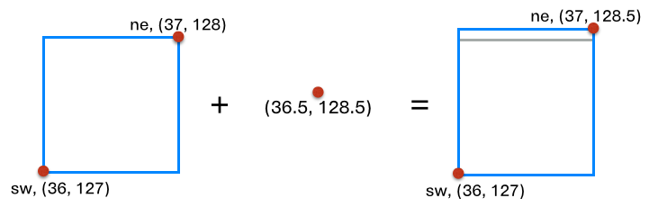
Parameters
latlngLatLng
contain(latlng)
영역 객체가 인수로 주어진 좌표를 포함하는지 확인한다.
var sw = new kakao.maps.LatLng(36, 127),
ne = new kakao.maps.LatLng(37, 128),
lb = new kakao.maps.LatLngBounds(sw, ne),
l1 = new kakao.maps.LatLng(36.5, 127.5),
l2 = new kakao.maps.LatLng(37, 128);
lb.contain(l1); // true
lb.contain(l2); // falseParameters
latlngLatLng
Returns
- Boolean
Point Methods
화면 좌표(픽셀 단위) 정보를 담고 있는 객체
Constructor
kakao.maps.Point(x, y)
화면 좌표 정보를 담고 있는 포인트 객체를 생성한다.
var point = new kakao.maps.Point(12, 34);Parameters
x: Numbery: Number
Methods
equals(point)
포인트 객체와 같은 좌표를 가지고 있는 객체인지 비교한다.
var p = new kakao.maps.Point(1, 1),
p1 = new kakao.maps.Point(1, 1),
p2 = new kakao.maps.Point(2, 2);
p.equals(p1); // true
p.equals(p2); // falseParameters
pointPoint
Returns
- Boolean
toString()
포인트 객체가 가지고 있는 좌표를 문자열로 반환한다.
var p = new kakao.maps.Point(480, 960);
p.toString(); // "(480, 960)"Returns
- String
Size Methods
크기 정보(픽셀 단위)를 담고 있는 객체
Constructor
kakao.maps.Size(width, height)
크기 정보를 담고 있는 사이즈 객체를 생성한다.
var size = new kakao.maps.Size(56, 78);Parameters
widthNumberheightNumber
Methods
equals(size)
사이즈 객체가 가지고 있는 크기와 같은 크기를 가지고 있는 객체인지 비교한다.
var s = new kakao.maps.Size(1, 1),
s1 = new kakao.maps.Size(1, 1),
s2 = new kakao.maps.Size(2, 2);
s.equals(s1); // true
s.equals(s2); // falseParameters
sizeSize
Returns
- Boolean
toString()
사이즈 객체가 가지고 있는 크기를 문자열로 반환한다.
var s = new kakao.maps.Size(480, 960);
s.toString(); // "(480, 960)"Returns
- String
event Static Methods
지도 객체의 이벤트 관련 함수를 담은 네임스페이스
Static Methods
addListener(target, type, handler)
다음 지도 API 객체에 이벤트를 등록한다.
kakao.maps.event.addListener(map, 'idle', function() {
alert('nothing to do');
});Parameters
targetEventTarget : 이벤트를 지원하는 다음 지도 API 객체typeString : 이벤트 이름handlerFunction : 이벤트를 처리할 함수
removeListener(target, type, handler)
다음 지도 API 객체에 등록된 이벤트를 제거한다.
var clickHandler = function(event) {
alert('click: ' + event.latLng.toString());
};
kakao.maps.event.addListener(map, 'click', clickHandler);
kakao.maps.event.removeListener(map, 'click', clickHandler);Parameters
targetEventTarget : 이벤트를 지원하는 다음 지도 API 객체typeString : 이벤트 이름handlerFunction : 이벤트를 처리하던 함수
trigger(target, type, data)
다음 지도 API 객체에 등록된 이벤트를 발생시킨다.
// 마커 객체에 사용자 이벤트를 등록한다
kakao.maps.event.addListener(marker, 'custom_action', function(data){
console.log(data + '가 발생했습니다.');
});
// 마커 객체에 등록한 사용자 이벤트를 발생시킨다
kakao.maps.event.trigger(marker, 'custom_action', '사용자 이벤트'); // 사용자 이벤트가 발생했습니다.Parameters
targetEventTarget : 이벤트를 지원하는 다음 지도 API 객체typeString : 이벤트 이름data* : 이벤트를 처리하는 함수에 넘길 변수
preventMap()
다음 Map 객체의 이벤트를 막는다.
보통 CustomOverlay의 content 혹은 외부 Element의 이벤트 핸들러에서 지도의 이벤트를 막고 싶을 경우 사용한다.
이벤트의 핸들러 내부에서 이 함수를 사용하며, 이벤트의 핸들링이 끝나면 Map 객체의 이벤트는 다시 정상 동작하게 된다.
kakao.maps.event.preventMap();MouseEvent
마우스 이벤트로 넘겨 받는 인자
직접 생성할 수는 없으며 이벤트 핸들러에서 내부적으로 생성된 객체를 parameter로 받아 사용한다.
Properties
latLng
지도 좌표
kakao.maps.event.addListener(map, 'click', function(mouseEvent) {
alert(mouseEvent.latLng instanceof kakao.maps.LatLng); // true
});Type
point
화면 좌표
kakao.maps.event.addListener(map, 'click', function(event) {
alert(event.point instanceof kakao.maps.Point); // true
});Type
Marker Methods Events
Constructor
kakao.maps.Marker(options)
주어진 객체로 마커를 생성한다.
지도 뿐만 아니라 로드뷰 위에도 올릴 수 있다.
마커 생성하기 샘플보기
로드뷰에 마커와 인포윈도우 올리기 샘플보기
마커의 고도와 반경 조절하기 샘플보기
var marker = new kakao.maps.Marker({
map: map,
position: new kakao.maps.LatLng(33.450701, 126.570667)
});Parameters
optionsObjectmapMap | Roadview : 마커가 올라갈 지도 또는 로드뷰positionLatLng | Viewpoint : 마커의 좌표 또는 로드뷰에서의 시점imageMarkerImage : 마커의 이미지titleString : 마커 엘리먼트의 타이틀 속성 값 (툴팁)draggableBoolean : 드래그 가능한 마커, 로드뷰에 올릴 경우에는 유효하지 않다clickableBoolean : 클릭 가능한 마커zIndexNumber : 마커 엘리먼트의 z-index 속성 값opacityNumber : 마커 투명도 (0-1)altitudeNumber : 로드뷰에 올라있는 마커의 높이 값(m 단위)rangeNumber : 로드뷰 상에서 마커의 가시반경(m 단위), 두 지점 사이의 거리가 지정한 값보다 멀어지면 마커는 로드뷰에서 보이지 않게 된다
Methods
setMap(map_or_roadview)
지도 또는 로드뷰에 마커를 올린다.
null 을 지정하면 마커를 제거한다.
마커 생성하기 샘플보기
여러개 마커 제어하기 샘플보기
marker.setMap(map); // 지도에 올린다.
marker.setMap(null); // 지도에서 제거한다.
marker.setMap(roadview); // 로드뷰에 올린다.Parameters
getMap()
마커가 올라가있는 지도를 반환한다.
marker.getMap();Returns
setImage(image)
마커에 새 MarkerImage를 지정한다.
다른 이미지로 마커 생성하기 샘플보기
var markerImage = new kakao.maps.MarkerImage(
'https://i1.daumcdn.net/dmaps/apis/nlocalblit04.png',
new kakao.maps.Size(31, 35), new kakao.maps.Point(13, 34));
marker.setImage(markerImage);Parameters
imageMarkerImage
getImage()
마커의 MarkerImage를 반환한다.
marker.getImage(); // 지정했던 MarkerImage의 인스턴스를 리턴한다.Returns
setPosition(position)
마커의 좌표를 지정한다.
로드뷰의 특정 시점에 고정하기 위해서 Viewpoint 객체를 사용할 수도 있다.
panoId를 지정한 Viewpoint 를 사용하면 panoId에 해당하는 로드뷰 위치에서만 보이게 된다.
// 지도 혹은 로드뷰에서 마커의 위치를 지정
marker.setPosition(new kakao.maps.LatLng(33.450701, 126.570667));
// 로드뷰에서 특정 시점에 고정된 마커의 위치를 지정
marker.setPosition(new kakao.maps.Viewpoint(30, -10));
// 로드뷰에서 특정 시점 및 특정 panoId에서만 보이도록 고정된 마커의 위치를 지정
marker.setPosition(new kakao.maps.Viewpoint(30, -10, 0, 1033283653));Parameters
getPosition()
마커의 좌표를 반환한다.
marker.getPosition();Returns
setZIndex(zIndex)
마커의 z-index를 설정한다.
marker.setZIndex(3);Parameters
zIndexNumber
getZIndex()
마커의 z-index를 반환한다.
var marker = new kakao.maps.Marker({
zIndex: 4
});
marker.getZIndex(); // 4Returns
- Number
setVisible(visible)
마커의 표시 여부를 지정한다.
marker.setVisible(false); // 마커를 숨긴다.Parameters
visibleBoolean
getVisible()
마커의 표시 여부를 반환한다.
marker.setVisible(true);
marker.getVisible(); // trueReturns
- Boolean
setTitle(title)
마커의 툴팁을 설정한다.
marker.setTitle('타이틀');Parameters
titleString
getTitle()
마커의 툴팁을 반환한다.
var marker = new kakao.maps.Marker({
title: "마커 타이틀을 획득하셨습니다."
});
marker.getTitle(); // "마커 타이틀을 획득하셨습니다."Returns
- String
setDraggable(draggable)
드래그 가능 여부를 지정한다.
로드뷰에 올라가 있을 경우에는 마커의 드래그 기능을 비활성화 되기 때문에
지도에 올라가 있을 경우에만 의미가 있다.
marker.setDraggable(true); // 드래그 가능하도록 설정Parameters
draggableBoolean
getDraggable()
드래그 가능 여부를 반환한다.
marker.getDraggable();Returns
- Boolean
setClickable(clickable)
클릭 가능 여부를 지정한다.
true 로 지정하게 되면 마커를 클릭 했을 때, 지도의 클릭 이벤트가 발생하지 않도록 막아준다.
marker.setClickable(true);Parameters
clickableBoolean
getClickable()
클릭 가능 여부를 반환한다.
marker.getClickable();Returns
- Boolean
setAltitude(altitude)
로드뷰상에서 마커의 높이(위치)를 지정한다.
단위는 m(미터)이며 현재 로드뷰의 바닥 높이를 기준으로 떨어져있는 높이를 말한다.
marker.setAltitude(10);Parameters
altitudeNumber
현재 보고있는 시점이 지면으로부터 약 1.7m 떨어져 있다고 가정하고 지면의 높이값을 0으로 계산한다. 때문에 높이값이 정확하지 않을 수 있다.
또한 로드뷰를 찍은 위치의 정보(해발 고도, 기울어짐)는 고려하지 않기 때문에 마커가 찍힌 위치가 어색하거나 부정확할 수 있다.
보통은 2층 이상에 존재하는 장소를 로드뷰에 대략적으로 표시하기 위해서 사용한다.
getAltitude()
마커의 높이(위치)를 반환한다.
단위는 m(미터).
var marker = new kakao.maps.Marker({
altitude: 10
});
marker.getAltitude(); // 10Returns
- Number
setRange(range)
마커의 가시반경을 설정한다.
로드뷰의 위치와 마커의 위치 사이의 거리가 가시반경 이내일 경우에만 로드뷰상에 노출된다.
단위는 m(미터)이며 기본값은 500m이다.
marker.setRange(300);Parameters
rangeNumber
getRange()
마커의 가시반경을 반환한다.
단위는 m(미터).
var marker = new kakao.maps.Marker({
range: 300
});
marker.getRange(); // 300Returns
- Number
setOpacity(opacity)
마커의 투명도를 설정한다.
marker.setOpacity(0.5);Parameters
opacityNumber
getOpacity()
마커의 투명도를 반환한다.
var marker = new kakao.maps.Marker({
opacity: 0.5
});
marker.getOpacity(); // 0.5Returns
- Number
Events
click
마커를 클릭하면 발생한다.
마커에 클릭 이벤트 등록하기 샘플보기
kakao.maps.event.addListener(marker, 'click', function() {
alert('marker click!');
});mouseover
마커에 마우스 커서를 올리면 발생한다.
마커에 마우스 이벤트 등록하기 샘플보기
kakao.maps.event.addListener(marker, 'mouseover', function() {
alert('marker mouseover!');
});mouseout
마우스 커서가 마커에서 벗어나면 발생한다.
마커에 마우스 이벤트 등록하기 샘플보기
kakao.maps.event.addListener(marker, 'mouseout', function() {
alert('marker mouseout!');
});rightclick
마커를 오른쪽 버튼으로 클릭하면 발생한다.
kakao.maps.event.addListener(marker, 'rightclick', function() {
alert('marker rightclick!');
});dragstart
드래그를 시작하면 발생한다.
draggable 마커 이벤트 적용하기 샘플보기
kakao.maps.event.addListener(marker, 'dragstart', function() {
alert('marker dragstart!');
});dragend
드래그를 종료하면 발생한다.
draggable 마커 이벤트 적용하기 샘플보기
kakao.maps.event.addListener(marker, 'dragend', function() {
alert('marker dragend!');
});MarkerImage
기본 마커가 아닌, 별도의 이미지를 이용하여 마커를 만들기 위한 이미지 생성 객체
다른 이미지로 마커 생성하기 샘플보기
다양한 이미지 마커 표시하기 샘플보기
Constructor
kakao.maps.MarkerImage(src, size[, options])
마커에 사용할 이미지를 생성한다.
세 번째 파라메터로 offset을 사용할 경우 네 번째 파라메터로 shape, 다섯 번째 파라메터로 coords를 넣을 수 있다.
// 세 번째 파라메터로 options를 사용.
var icon = new kakao.maps.MarkerImage(
'https://localimg.daum-img.net/localimages/07/2009/map/icon/blog_icon01_on.png',
new kakao.maps.Size(31, 35),
{
offset: new kakao.maps.Point(16, 34),
alt: "마커 이미지 예제",
shape: "poly",
coords: "1,20,1,9,5,2,10,0,21,0,27,3,30,9,30,20,17,33,14,33"
}
);
/*
아래와 같이 세번째 파라메터부터 순서대로 offset, shape, coords 값을 넣어주는 방식으로도 사용 가능하다.
var icon = new kakao.maps.MarkerImage(
'https://localimg.daum-img.net/localimages/07/2009/map/icon/blog_icon01_on.png',
new kakao.maps.Size(31, 35),
new kakao.maps.Point(16, 34),
"poly",
"1,20,1,9,5,2,10,0,21,0,27,3,30,9,30,20,17,33,14,33"
);
*/
new kakao.maps.Marker({
position: new kakao.maps.LatLng(33.450701, 126.570667),
image: icon
}).setMap(map);
Parameters
srcString : 이미지 주소sizeSize : 마커의 크기optionsObejct
옵션으로 지정한 shape와 coords의 값은 각각 실제 HTML에서 <area>의 shape와 coords 속성에 대응한다. 예를 들어 설명하자면 아래와 같다.
아래의 이미지로 MarkerImage를 만들어 보자.
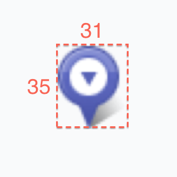이미지의 크기는 31×35이다. 추가 옵션없이 생성해보자.
var icon = new kakao.maps.MarkerImage( 'https://i1.daumcdn.net/dmaps/apis/n_local_blit_04.png', new kakao.maps.Size(31, 35));이렇게 만들어진 MarkerImage의 HTML 마크업을 단순화하면 다음과 같다.
// Result <img width="31" height="35" src="https://i1.daumcdn.net/dmaps/apis/n_local_blit_04.png" alt="">이 MarkerImage로 생성한 Marker에 클릭 이벤트를 등록하면 이미지 크기에 해당하는 영역 전체에서 클릭 이벤트가 발생한다.
다음과 같은 특정 영역에서만 클릭 이벤트가 발생하도록 해 보자.
옵션으로 shape와 coords값을 주어 MarkerImage를 만든다.
var icon = new kakao.maps.MarkerImage( 'https://i1.daumcdn.net/dmaps/apis/n_local_blit_04.png', new kakao.maps.Size(31, 35), { shape: 'poly', coords: '16,0,20,2,24,6,26,10,26,16,23,22,17,25,14,35,13,35,9,25,6,24,2,20,0,16,0,10,2,6,6,2,10,0' });위의 코드로 만들어진 HTML 마크업의 대략적인 구조는 다음과 같다.
// Result <img width="31" height="35" src="https://i1.daumcdn.net/dmaps/apis/n_local_blit_04.png" alt="" usemap="#Marker"> <map name="Marker"> <area alt="" shape="poly" coords="16,0,20,2,24,6,26,10,26,16,23,22,17,25,14,35,13,35,9,25,6,24,2,20,0,16,0,10,2,6,6,2,10,0"> </map>위와 같이 생성된 Marker는 아래 그림에서 보이는 푸른색 영역에서만 클릭 이벤트가 발생한다.
자세한 내용은 Image Maps 관련 W3C 문서 를 참조한다.
InfoWindow Methods
인포윈도우 객체
Constructor
kakao.maps.InfoWindow(options)
주어진 객체로 인포윈도우를 생성한다.
지도 뿐만 아니라 로드뷰 위에도 올릴 수 있다.
인포윈도우 생성하기 샘플보기
로드뷰에 마커와 인포윈도우 올리기 샘플보기
마커의 고도와 반경 조절하기 샘플보기
var infowindow = new kakao.maps.InfoWindow({
map: map,
position: new kakao.maps.LatLng(33.450701, 126.570667),
content: 'I am InfoWindow'
});
Parameters
optionsObjectcontentNode | String : 엘리먼트 또는 HTML 문자열 형태의 내용disableAutoPanBoolean : 인포윈도우를 열 때 지도가 자동으로 패닝하지 않을지의 여부 (기본값: false)mapMap | Roadview : 인포윈도우가 올라갈 지도 또는 로드뷰positionLatLng : 인포윈도우의 좌표removableBoolean : 삭제 가능한 인포윈도우zIndexNumber : 인포윈도우 엘리먼트의 z-index 속성 값altitudeNumber : 로드뷰에 올라있는 인포윈도우의 높이 값(m 단위)rangeNumber : 로드뷰 상에서 인포윈도우의 가시반경(m 단위), 두 지점 사이의 거리가 지정한 값보다 멀어지면 인포윈도우는 보이지 않게 된다
Methods
open(map_or_roadview [, marker])
지도에 인포윈도우를 올린다.
marker가 주어지면, 해당 마커에서 열린 효과를 낸다.
로드뷰에서도 같은 동작을 한다.
마커에 인포윈도우 표시하기 샘플보기
var map = new kakao.maps.Map(container, options);
var marker = new kakao.maps.Marker(options);
var infowindow = new kakao.maps.InfoWindow({
position: new kakao.maps.LatLng(33.450701, 126.570667),
content: 'open me plz.'
});
infowindow.open(map, marker);Parameters
close()
인포윈도우를 제거한다.
infowindow.close();getMap()
인포윈도우가 올라가있는 지도를 반환한다.
infowindow.getMap();Returns
setPosition(position)
인포윈도우의 좌표를 지정한다.
로드뷰의 특정 시점에 고정하기 위해서 Viewpoint 객체를 사용할 수도 있다.
panoId를 지정한 Viewpoint 를 사용하면 panoId에 해당하는 로드뷰 위치에서만 보이게 된다.
var position = new kakao.maps.LatLng(33.450701, 126.570667);
infowindow.setPosition(position);Parameters
getPosition()
인포윈도우의 좌표를 반환한다.
infowindow.getPosition();Returns
setContent(content)
인포윈도우의 내용을 지정한다.
엘리먼트 또는 HTML 문자열을 지정할 수 있다.
infowindow.setContent('This is all for you');Parameters
contentNode | String
getContent()
인포윈도우의 내용을 지정했던 형태로 반환한다.
infowindow.getContent(); // "This is all for you"Returns
- Node | String
setZIndex(zIndex)
인포윈도우의 z-index를 설정한다.
infoWindow.setZIndex(3);Parameters
zIndexNumber
getZIndex()
인포윈도우의 z-index를 반환한다.
var infoWindow = new kakao.maps.InfoWindow({
zIndex: 4
});
infoWindow.getZIndex(); // 4Returns
- Number
setAltitude(altitude)
로드뷰상에서 인포윈도우의 높이(위치)를 지정한다.
단위는 m(미터)이며 현재 로드뷰의 바닥 높이를 기준으로 떨어져있는 높이를 말한다.
infoWindow.setAltitude(10);Parameters
altitudeNumber
현재 보고있는 시점이 지면으로부터 약 1.7m 떨어져 있다고 가정하고 지면의 높이값을 0으로 계산한다. 때문에 높이값이 정확하지 않을 수 있다.
또한 로드뷰를 찍은 위치의 정보(해발 고도, 기울어짐)는 고려하지 않기 때문에 인포윈도우가 찍힌 위치가 어색하거나 부정확할 수 있다.
보통은 로드뷰에 보이는 2층 이상의 장소정보를 대략적으로 표시하기 위해서 사용한다.
getAltitude()
인포윈도우의 높이(위치)를 반환한다.
단위는 m(미터).
var infoWindow = new kakao.maps.InfoWindow({
altitude: 10
});
infoWindow.getAltitude(); // 10Returns
- Number
setRange(range)
인포윈도우의 가시반경을 설정한다.
로드뷰의 위치와 인포윈도우의 위치 사이의 거리가 가시반경 이내일 경우에만 로드뷰상에 노출된다.
단위는 m(미터)이며 기본값은 500m이다.
infoWindow.setRange(300);Parameters
rangeNumber
getRange()
인포윈도우의 가시반경을 반환한다.
단위는 m(미터).
var infoWindow = new kakao.maps.InfoWindow({
range: 300
});
infoWindow.getRange(); // 300Returns
- Number
CustomOverlay Methods
커스텀한 엘리먼트를 담아 지도위에 올릴 수 있는 오버레이 객체.
Infowindow 보다는 담을 수 있는 컨텐츠가 자유롭고 AbstractOverlay 보다 사용하기 쉽다는 장점이 있다.
Constructor
kakao.maps.CustomOverlay(options)
주어진 객체로 커스텀 오버레이를 생성한다.
지도 뿐만 아니라 로드뷰 위에도 올릴 수 있다.
커스텀 오버레이 생성하기1 샘플보기
커스텀 오버레이 생성하기2 샘플보기
로드뷰에 커스텀 오버레이 올리기 샘플보기
로드뷰에 이미지 올리기 샘플보기
커스텀오버레이를 드래그 하기 샘플보기
var customOverlay = new kakao.maps.CustomOverlay({
map: map,
clickable: true,
content: '<div class="customOverlay"><a href="#">Chart</a></div>',
position: new kakao.maps.LatLng(33.450701, 126.570667),
xAnchor: 0.5,
yAnchor: 1,
zIndex: 3
});Parameters
optionsObjectclickableBoolean : true 로 설정하면 컨텐츠 영역을 클릭했을 경우 지도 이벤트를 막아준다.contentNode | String : 엘리먼트 또는 HTML 문자열 형태의 내용mapMap | Roadview : 커스텀 오버레이가 올라갈 지도 또는 로드뷰positionLatLng | Viewpoint : 커스텀 오버레이의 좌표 또는 로드뷰에서의 시점xAnchorNumber : 컨텐츠의 x축 위치. 0_1 사이의 값을 가진다. 기본값은 0.5yAnchorNumber : 컨텐츠의 y축 위치. 0_1 사이의 값을 가진다. 기본값은 0.5zIndexNumber : 커스텀 오버레이의 z-index
Methods
setMap(map_or_roadview)
지도 또는 로드뷰에 커스텀 오버레이를 올린다.
null 을 지정하면 오버레이를 제거한다.
customOverlay.setMap(map); // 지도에 올린다.
customOverlay.setMap(null); // 지도에서 제거한다.
customOverlay.setMap(roadview); // 로드뷰에 올린다.Parameters
getMap()
커스텀 오버레이가 올라가있는 지도를 반환한다.
customOverlay.getMap();Returns
setPosition(position)
커스텀 오버레이의 좌표를 지정한다.
로드뷰의 특정 시점에 고정하기 위해서 Viewpoint 객체를 사용할 수도 있다.
panoId를 지정한 Viewpoint 를 사용하면 panoId에 해당하는 로드뷰 위치에서만 보이게 된다.
Parameters
getPosition()
커스텀 오버레이의 좌표를 반환한다.
Returns
setContent(content)
커스텀 오버레이의 내용을 지정한다.
엘리먼트 또는 HTML 문자열을 지정할 수 있다.
Parameters
contentNode | String
getContent()
커스텀 오버레이의 내용을 지정했던 형태로 반환한다.
Returns
- Node | String
setVisible(visible)
커스텀 오버레이의 표시 여부를 지정한다.
Parameters
visibleBoolean
getVisible()
커스텀 오버레이의 표시 여부를 반환한다.
Returns
- Boolean
setZIndex(zIndex)
커스텀 오버레이의 z-index를 설정한다.
Parameters
zIndexNumber
getZIndex()
커스텀 오버레이의 z-index를 반환한다.
Returns
- Number
setAltitude(altitude)
로드뷰상에서 커스텀 오버레이의 높이(위치)를 지정한다.
단위는 m(미터)이며 현재 로드뷰의 바닥 높이를 기준으로 떨어져있는 높이를 말한다.
customOverlay.setAltitude(10);Parameters
altitudeNumber
현재 보고있는 시점이 지면으로부터 약 1.7m 떨어져 있다고 가정하고 지면의 높이값을 0으로 계산한다. 때문에 높이값이 정확하지 않을 수 있다.
또한 로드뷰를 찍은 위치의 정보(해발 고도, 기울어짐)는 고려하지 않기 때문에 커스텀 오버레이가 찍힌 위치가 어색하거나 부정확할 수 있다.
보통은 2층 이상에 존재하는 장소를 로드뷰에 대략적으로 표시하기 위해서 사용한다.
getAltitude()
커스텀 오버레이의 높이(위치)를 반환한다.
단위는 m(미터).
var customOverlay = new kakao.maps.CustomOverlay({
altitude: 10
});
customOverlay.getAltitude(); // 10Returns
- Number
setRange(range)
커스텀 오버레이의 가시반경을 설정한다.
로드뷰의 위치와 커스텀 오버레이의 위치 사이의 거리가 가시반경 이내일 경우에만 로드뷰상에 노출된다.
단위는 m(미터)이며 기본값은 500m이다.
customOverlay.setRange(300);Parameters
rangeNumber
getRange()
커스텀 오버레이의 가시반경을 반환한다.
단위는 m(미터).
var customOverlay = new kakao.maps.CustomOverlay({
range: 300
});
customOverlay.getRange(); // 300Returns
- Number
AbstractOverlay Methods
Constructor
kakao.maps.AbstractOverlay()
API 사용자가 직접 정의할 수 있는 오버레이.
AbstractOverlay를 상속 받아 사용할 객체를 생성하고 prototype을 연결해 준다.
온전히 동작하는 오버레이를 만들고자 한다면 3가지 인터페이스 메소드( onAdd, draw, onRemove )를 구현해야 한다.
지도 영역 밖의 마커위치 추적하기 샘플보기
// 간단한 텍스트를 지도에 올리는 예제
// 생성자에서 엘리먼트를 생성한다.
function SimpleTextMarker(position, text) {
this.position = position;
this.node = document.createElement('div');
this.node.style.position = 'absolute';
this.node.style.whiteSpace = 'nowrap';
this.node.appendChild(document.createTextNode(text));
}
// "AbstractOverlay":#AbstractOverlay 상속. 프로토타입 체인을 연결한다..
SimpleTextMarker.prototype = new kakao.maps.AbstractOverlay;
// 필수 구현 메소드.
// AbstractOverlay의 getPanels() 메소드로 MapPanel 객체를 가져오고
// 거기에서 오버레이 레이어를 얻어 생성자에서 만든 엘리먼트를 자식 노드로 넣어준다.
SimpleTextMarker.prototype.onAdd = function() {
var panel = this.getPanels().overlayLayer;
panel.appendChild(this.node);
};
// 필수 구현 메소드.
// 생성자에서 만든 엘리먼트를 오버레이 레이어에서 제거한다.
SimpleTextMarker.prototype.onRemove = function() {
this.node.parentNode.removeChild(this.node);
};
// 필수 구현 메소드.
// 지도의 속성 값들이 변화할 때마다 호출된다. (zoom, center, mapType)
// 엘리먼트의 위치를 재조정 해 주어야 한다.
SimpleTextMarker.prototype.draw = function() {
var projection = this.getProjection();
var point = projection.pointFromCoords(this.position);
var width = this.node.offsetWidth;
var height = this.node.offsetHeight;
this.node.style.left = (point.x - width/2) + "px";
this.node.style.top = (point.y - height/2) + "px";
};
var marker = new SimpleTextMarker(map.getCenter(), 'You just activated my trap card!');
marker.setMap(map);Methods
draw()
위치를 재조정할 필요가 있을 때 호출된다.
이 함수 내에서 엘리먼트의 위치를 잡아주어야 한다.
onAdd()
지도에 올릴 때 호출된다.
setMap(map) 을 실행하면 이 함수가 실행된다.
이 함수 내에서 생성된 DOM 객체를 MapPanels에 자식 노드로 넣어주도록 한다.
onRemove()
지도에서 제거할 때 호출된다.
setMap(null) 을 실행하면 이 함수가 실행된다.
이 함수 내에서 MapPanels에 자식 노드로 넣어준 엘리먼트를 제거하도록 한다.
setMap(map)
지도에 사용자 오버레이를 올린다.
null 을 지정하면 오버레이를 제거한다.
Parameters
map: Map
getMap()
사용자 오버레이가 올라가있는 지도를 반환한다.
Returns
getPanels()
붙어있는 지도의 패널을 반환한다.
Returns
getProjection()
붙어있는 지도의 좌표 변환 객체를 반환한다.
Returns
MapPanels
지도의 패널을 담당하는 객체.
Properties
overlayLayer
오버레이를 올릴 수 있는 HTML 엘리먼트
MapProjection Methods
지도와 화면 사이의 좌표 변환을 담당한다.
지도 또는 지도에 올라온 오버레이 객체가 가진 getProjection() 메소드로 얻을 수 있다.
별도의 생성자는 제공하지 않는다.
Methods
pointFromCoords(latlng)
지도 좌표에 해당하는 위치 좌표(pixel)를 반환한다.
해당 위치 좌표는 지도 엘리먼트 내부의 레이어 위치를 반영한 좌표이다.
지도 영역 밖의 마커위치 추적하기 샘플보기
var mapProjection = map.getProjection(),
latlng = new kakao.maps.LatLng(33.450701, 126.570667);
mapProjection.pointFromCoords(latlng); // 지도 좌표에 해당하는 위치 좌표Parameters
latlngLatLng
Returns
coordsFromPoint(point)
위치 좌표(pixel)에 해당하는 지도 좌표를 반환한다.
해당 위치 좌표는 지도 엘리먼트 내부의 타일 레이어 위치를 반영한 좌표이다.
지도 영역 밖의 마커위치 추적하기 샘플보기
var mapProjection = map.getProjection(),
point = new kakao.maps.Point(200, 100);
mapProjection.coordsFromPoint(point); // 위치 좌표에 해당하는 지도 좌표Parameters
pointPoint
Returns
containerPointFromCoords(latlng)
지도 좌표에 해당하는 화면 좌표(pixel)를 반환한다.
해당 화면 좌표는 지도 엘리먼트의 좌상단을 기준으로 한 좌표이다.
커스텀오버레이를 드래그 하기 샘플보기
var mapProjection = map.getProjection(),
latlng = new kakao.maps.LatLng(33.450701, 126.570667);
mapProjection.containerPointFromCoords(latlng); // 지도 좌표에 해당하는 화면 좌표Parameters
latlngLatLng
Returns
coordsFromContainerPoint(point)
화면 좌표(pixel)에 해당하는 지도 좌표를 반환한다.
해당 화면 좌표는 지도 엘리먼트의 좌상단을 기준으로 한 좌표이다.
커스텀오버레이를 드래그 하기 샘플보기
var mapProjection = map.getProjection(),
point = new kakao.maps.Point(200, 100);
mapProjection.coordsFromContainerPoint(point); // 화면 좌표에 해당하는 지도 좌표Parameters
pointPoint
Returns
Polyline Methods Events
폴리라인 객체
Constructor
kakao.maps.Polyline(options)
주어진 객체로 폴리라인을 생성한다.
원, 선, 사각형, 다각형 표시하기 샘플보기
var polyline = new kakao.maps.Polyline({
map: map,
path: [
new kakao.maps.LatLng(33.452344169439975, 126.56878163224233),
new kakao.maps.LatLng(33.452739313807456, 126.5709308145358),
new kakao.maps.LatLng(33.45178067090639, 126.5726886938753)
],
strokeWeight: 2,
strokeColor: '#FF00FF',
strokeOpacity: 0.8,
strokeStyle: 'dashed'
});Parameters
optionsObjectendArrowBoolean : 화살표 여부pathArray.< LatLng > | Array.<Array.< LatLng >> : 폴리라인을 구성하는 좌표의 배열 또는 좌표 배열의 배열strokeWeightNumber : 픽셀 단위의 선 두께 (기본값: 3)strokeColorString : #xxxxxx 형태의 선 색 (기본값: ‘#F10000’)strokeOpacityNumber : 선 불투명도 (0-1) (기본값: 0.6)strokeStyleString : 선 스타일 (기본값: ‘solid’)zIndexNumber : 선의 z-index 속성 값
Methods
setMap(map)
지도에 폴리라인을 올린다.
null 을 지정하면 폴리라인을 제거한다.
polyline.setMap(map); // 지도에 올린다.
polyline.setMap(null); // 지도에서 제거한다.Parameters
mapMap
getMap()
폴리라인이 올라가있는 지도를 반환한다.
polyline.getMap(); // kakao.maps.MapReturns
setOptions(options)
폴리라인의 옵션을 설정한다.
polyline.setOptions({
strokeWeight: 2,
strokeColor: '#FF00FF',
strokeOpacity: 0.8,
strokeStyle: 'dashed'
});Parameters
- options : Object
setPath(path)
폴리라인의 경로를 지정한다.
경로는 좌표의 배열로 표현한다.
var newpath = [
new kakao.maps.LatLng(33.452344169439975, 126.56878163224233),
new kakao.maps.LatLng(33.452739313807456, 126.5709308145358),
new kakao.maps.LatLng(33.45178067090639, 126.5726886938753)
];
polyline.setPath(newpath);Parameters
- path : Array.< LatLng > : 좌표의 배열
getPath()
폴리라인의 경로를 반환한다.
polyline.getPath(); // 경로정보가 배열로 반환된다.Returns
- Array.< LatLng >
getLength()
폴리라인의 총 길이를 m(미터)단위로 반환한다.
선의 거리 계산하기 샘플보기
polyline.getLength(); Returns
- Number
setZIndex()
폴리라인의 z-index를 설정한다.
polyline.setZIndex(3);Parameters
zIndexNumber
getZIndex()
폴리라인의 z-index를 반환한다.
var polyline = new kakao.maps.Polyline({
zIndex: 4
});
polyline.getZIndex(); // 4Returns
- Number
Events
안드로이드 2.3버전 이하에서는 Event를 지원하지 않습니다.
mouseover
폴리라인에 마우스 커서를 올리면 발생한다.
kakao.maps.event.addListener(polyline, 'mouseover', function(mouseEvent) {
var latlng = mouseEvent.latLng;
console.log(latlng.toString());
});Arguments
mouseout
마우스 커서가 폴리라인에서 벗어나면 발생한다.
kakao.maps.event.addListener(polyline, 'mouseout', function(mouseEvent) {
var latlng = mouseEvent.latLng;
console.log(latlng.toString());
});Arguments
mousemove
폴리라인에서 마우스가 움직이면 발생한다.
kakao.maps.event.addListener(polyline, 'mousemove', function(mouseEvent) {
var latlng = mouseEvent.latLng;
console.log(latlng.toString());
});Arguments
mousedown
폴리라인에서 마우스 버튼을 누르면 발생한다.
kakao.maps.event.addListener(polyline, 'mousedown', function(mouseEvent) {
var latlng = mouseEvent.latLng;
console.log(latlng.toString());
});Arguments
click
폴리라인을 클릭하면 발생한다
kakao.maps.event.addListener(polyline, 'click', function(mouseEvent) {
var latlng = mouseEvent.latLng;
console.log(latlng.toString());
});Arguments
Polygon Methods Events
다각형 객체
Constructor
kakao.maps.Polygon(polygonOptions)
주어진 객체로 다각형을 생성한다.
원, 선, 사각형, 다각형 표시하기 샘플보기
구멍난 다각형 만들기 샘플보기
var polygon = new kakao.maps.Polygon({
map: map,
path: [
new kakao.maps.LatLng(33.452344169439975, 126.56878163224233),
new kakao.maps.LatLng(33.452739313807456, 126.5709308145358),
new kakao.maps.LatLng(33.45178067090639, 126.5726886938753)
],
strokeWeight: 2,
strokeColor: '#FF00FF',
strokeOpacity: 0.8,
strokeStyle: 'dashed',
fillColor: '#00EEEE',
fillOpacity: 0.5
});Parameters
optionsObjectfillColorString : #xxxxxx 형태의 채움 색 (기본값: ‘#F10000’)fillOpacityNumber : 채움 불투명도 (0-1) (기본값: 0)pathArray.< LatLng > | Array.<Array.< LatLng >> : 다각형을 구성하는 좌표의 배열 혹은 좌표 배열의 배열strokeWeightNumber : 픽셀 단위의 선 두께 (기본값: 3)strokeColorString : #xxxxxx 형태의 선 색 (기본값: ‘#F10000’)strokeOpacityNumber : 선 불투명도 (0-1) (기본값: 0.6)strokeStyleString : 선 스타일 (기본값: ‘solid’)zIndexNumber : 다각형의 z-index 속성 값
Methods
setMap(map)
지도에 다각형을 올린다.
null 을 지정하면 다각형을 제거한다.
polygon.setMap(map); // 지도에 올린다.
polygon.setMap(null); // 지도에서 제거한다.Parameters
mapMap
getMap()
다각형이 올라가있는 지도를 반환한다.
polygon.getMap();Returns
setOptions(options)
다각형의 옵션을 설정한다.
polygon.setOptions({
strokeWeight: 2,
strokeColor: '#FF00FF',
strokeOpacity: 0.8,
strokeStyle: 'dashed',
fillColor: '#00EEEE',
fillOpacity: 0.5
});Parameters
optionsObject
setPath(path)
다각형의 경로를 지정한다.
경로는 좌표의 배열로 표현한다.
polygon.setPath([
new kakao.maps.LatLng(33.452344169439975, 126.56878163224233),
new kakao.maps.LatLng(33.452739313807456, 126.5709308145358),
new kakao.maps.LatLng(33.45178067090639, 126.5726886938753)
]);Parameters
pathArray.< LatLng > : 좌표의 배열
getPath()
다각형의 경로를 반환한다.
polygon.getPath(); // 경로정보가 배열로 반환된다.Returns
- Array.< LatLng >
getLength()
다각형의 총 길이를 m(미터)단위로 반환한다.
polygon.getLength(); Returns
- Number
getArea()
다각형으로 둘러싸인 영역의 넓이를 ㎡(제곱미터)단위로 반환한다.
polygon.getArea(); Returns
- Number
setZIndex()
다각형의 z-index를 설정한다.
polygon.setZIndex(3);Parameters
zIndexNumber
getZIndex()
다각형의 z-index를 반환한다.
var polygon = new kakao.maps.Polygon({
zIndex: 4
});
polygon.getZIndex(); // 4Returns
- Number
Events
안드로이드 2.3버전 이하에서는 Event를 지원하지 않습니다.
mouseover
다각형에 마우스 커서를 올리면 발생한다.
다각형에 이벤트 등록하기1 샘플보기
다각형에 이벤트 등록하기2 샘플보기
kakao.maps.event.addListener(polygon, 'mouseover', function(mouseEvent) {
var latlng = mouseEvent.latLng;
console.log(latlng.toString());
});Arguments
mouseout
마우스 커서가 다각형에서 벗어나면 발생한다.
다각형에 이벤트 등록하기1 샘플보기
다각형에 이벤트 등록하기2 샘플보기
kakao.maps.event.addListener(polygon, 'mouseout', function(mouseEvent) {
var latlng = mouseEvent.latLng;
console.log(latlng.toString());
});Arguments
mousemove
다각형에서 마우스를 움직이면 발생한다.
다각형에 이벤트 등록하기2 샘플보기
kakao.maps.event.addListener(polygon, 'mousemove', function(mouseEvent) {
var latlng = mouseEvent.latLng;
console.log(latlng.toString());
});Arguments
mousedown
다각형에서 마우스 버튼을 누르면 발생한다.
다각형에 이벤트 등록하기1 샘플보기
다각형에 이벤트 등록하기2 샘플보기
kakao.maps.event.addListener(polygon, 'mousedown', function(mouseEvent) {
var latlng = mouseEvent.latLng;
console.log(latlng.toString());
});Arguments
click
다각형을 클릭하면 발생한다.
다각형에 이벤트 등록하기2 샘플보기
kakao.maps.event.addListener(polygon, 'click', function(mouseEvent) {
var latlng = mouseEvent.latLng;
console.log(latlng.toString());
});Arguments
Circle Methods Events
원 객체
Constructor
kakao.maps.Circle(options)
주어진 객체로 원을 생성한다.
원, 선, 사각형, 다각형 표시하기 샘플보기
var circle = new kakao.maps.Circle({
map: map,
center : new kakao.maps.LatLng(33.450701, 126.570667),
radius: 50,
strokeWeight: 2,
strokeColor: '#FF00FF',
strokeOpacity: 0.8,
strokeStyle: 'dashed',
fillColor: '#00EEEE',
fillOpacity: 0.5
});Parameters
optionsObjectcenterLatLng : 중심 좌표fillColorString : #xxxxxx 형태의 채움 색 (기본값: ‘#F10000’)fillOpacityNumber : 채움 불투명도 (0-1) (기본값: 0)radiusNumber : 미터 단위의 반지름strokeWeightNumber : 픽셀 단위의 선 두께 (기본값: 3)strokeColorString : #xxxxxx 형태의 선 색 (기본값: ‘#F10000’)strokeOpacityNumber : 선 불투명도 (0-1) (기본값: 0.6)strokeStyleString : 선 스타일 (기본값: ‘solid’)zIndexNumber : 원의 z-index 속성 값
Methods
setMap(map)
지도에 원을 올린다.
null 을 지정하면 원을 제거한다.
circle.setMap(map); // 지도에 올린다.
circle.setMap(null); // 지도에서 제거한다.Parameters
mapMap
getMap()
원이 올라가있는 지도를 반환한다.
circle.getMap();Returns
setOptions(options)
원의 옵션을 설정한다.
circle.setOptions({
radius: 20,
strokeWeight: 2,
strokeColor: '#FF00FF',
strokeOpacity: 0.8,
strokeStyle: 'dashed'
});Parameters
optionsObject
setPosition(position)
원의 중심 좌표를 지정한다.
var position = new kakao.maps.LatLng(33.450701, 126.570667);
circle.setPosition(position);Parameters
positionLatLng
getPosition()
원 중심의 좌표를 반환한다.
circle.getPosition().toString(); Returns
setRadius(radius)
원의 반지름을 m(미터)단위로 지정한다.
circle.setRadius(200);Parameters
radiusNumber
getRadius()
원의 반지름을 반환한다.
circle.getRadius(); // 200Returns
- Number
getBounds()
원을 포함하는 최소의 사각형 영역을 구한다.
circle.getBounds();Returns
setZIndex()
원의 z-index를 설정한다.
circle.setZIndex(3);Parameters
zIndexNumber
getZIndex()
원의 z-index를 반환한다.
var circle = new kakao.maps.Circle({
zIndex: 4
});
circle.getZIndex(); // 4Returns
- Number
Events
안드로이드 2.3버전 이하에서는 Event를 지원하지 않습니다.
mouseover
원에 마우스 커서를 올리면 발생한다.
kakao.maps.event.addListener(circle, 'mouseover', function(mouseEvent) {
var latlng = mouseEvent.latLng;
console.log(latlng.toString());
});Arguments
mouseout
마우스 커서가 원에서 벗어나면 발생한다.
kakao.maps.event.addListener(circle, 'mouseout', function(mouseEvent) {
var latlng = mouseEvent.latLng;
console.log(latlng.toString());
});Arguments
mousemove
원에서 마우스를 움직이면 발생한다.
kakao.maps.event.addListener(circle, 'mousemove', function(mouseEvent) {
var latlng = mouseEvent.latLng;
console.log(latlng.toString());
});Arguments
mousedown
원에서 마우스 버튼을 누르면 발생한다.
kakao.maps.event.addListener(circle, 'mousedown', function(mouseEvent) {
var latlng = mouseEvent.latLng;
console.log(latlng.toString());
});Arguments
click
원을 클릭하면 발생한다.
kakao.maps.event.addListener(circle, 'click', function(mouseEvent) {
var latlng = mouseEvent.latLng;
console.log(latlng.toString());
});Arguments
Ellipse Methods Events
타원 객체
Constructor
kakao.maps.Ellipse(options)
주어진 객체로 타원을 생성한다.
var ellipse = new kakao.maps.Ellipse({
map: map,
center : new kakao.maps.LatLng(33.450701, 126.570667),
rx: 50,
ry: 100,
strokeWeight: 2,
strokeColor: '#FF00FF',
strokeOpacity: 0.8,
strokeStyle: 'dashed',
fillColor: '#00EEEE',
fillOpacity: 0.5
});Parameters
optionsObjectcenterLatLng : 중심 좌표fillColorString : #xxxxxx 형태의 채움 색 (기본값: ‘#F10000’)fillOpacityNumber : 채움 불투명도 (0-1) (기본값: 0)rxNumber : 미터 단위의 x축 반지름ryNumber : 미터 단위의 y축 반지름strokeWeightNumber : 픽셀 단위의 선 두께 (기본값: 3)strokeColorString : #xxxxxx 형태의 선 색 (기본값: ‘#F10000’)strokeOpacityNumber : 선 불투명도 (0-1) (기본값: 0.6)strokeStyleString : 선 스타일 (기본값: ‘solid’)zIndexNumber : 타원의 z-index 속성 값
Methods
setMap(map)
지도에 타원을 올린다.
null 을 지정하면 타원을 제거한다.
ellipse.setMap(map); // 지도에 올린다.
ellipse.setMap(null); // 지도에서 제거한다.Parameters
mapMap
getMap()
타원이 올라가있는 지도를 반환한다.
ellipse.getMap(map);Returns
setOptions(options)
타원의 옵션을 설정한다.
ellipse.setOptions({
strokeWeight: 2,
strokeColor: '#FF00FF',
strokeOpacity: 0.8,
strokeStyle: 'dashed',
fillColor: '#00EEEE',
fillOpacity: 0.5
});Parameters
optionsObject
setPosition(position)
타원의 중심 좌표를 지정한다.
ellipse.setPosition(new kakao.maps.LatLng(33.450701, 126.570667));Parameters
positionLatLng
getPosition()
타원 중심의 좌표를 반환한다.
ellipse.getPosition().toString(); Returns
setRadius(rx, ry)
타원의 반지름을 m(미터)단위로 지정한다.
ellipse.setRadius(600, 1000);Parameters
rxNumberryNumber
getRadius()
타원의 x, y축 반지름을 반환한다.
ellipse.getRadius(); // { rx: 600, ry: 1000 }Returns
- Object
rxNumber : x축 반지름ryNumber : y축 반지름
getRadiusX()
타원의 x축 반지름을 반환한다.
ellipse.getRadiusX(); // 600Returns
- Boolean
getRadiusY()
타원의 y축 반지름을 반환한다.
ellipse.getRadiusY(); // 1000Returns
- Boolean
getBounds()
타원을 포함하는 최소의 사각형 영역을 구한다.
ellipse.getBounds();Returns
setZIndex()
타원의 z-index를 설정한다.
ellipse.setZIndex(3);Parameters
zIndexNumber
getZIndex()
타원의 z-index를 반환한다.
var ellipse = new kakao.maps.Ellipse({
zIndex: 4
});
ellipse.getZIndex(); // 4Returns
- Number
Events
안드로이드 2.3버전 이하에서는 Event를 지원하지 않습니다.
mouseover
타원에 마우스 커서를 올리면 발생한다.
kakao.maps.event.addListener(ellipse, 'mouseover', function(mouseEvent) {
var latlng = mouseEvent.latLng;
console.log(latlng.toString());
});Arguments
mouseout
마우스 커서가 타원에서 벗어나면 발생한다.
kakao.maps.event.addListener(ellipse, 'mouseout', function(mouseEvent) {
var latlng = mouseEvent.latLng;
console.log(latlng.toString());
});Arguments
mousemove
타원에서 마우스를 움직이면 발생한다.
kakao.maps.event.addListener(ellipse, 'mousemove', function(mouseEvent) {
var latlng = mouseEvent.latLng;
console.log(latlng.toString());
});Arguments
mousedown
타원에서 마우스 버튼을 누르면 발생한다.
kakao.maps.event.addListener(ellipse, 'mousedown', function(mouseEvent) {
var latlng = mouseEvent.latLng;
console.log(latlng.toString());
});Arguments
click
타원을 클릭하면 발생한다.
kakao.maps.event.addListener(ellipse, 'click', function(mouseEvent) {
var latlng = mouseEvent.latLng;
console.log(latlng.toString());
});Arguments
Rectangle Methods Events
사각형 객체
Constructor
kakao.maps.Rectangle(options)
주어진 객체로 사각형를 생성한다.
원, 선, 사각형, 다각형 표시하기 샘플보기
var rectangle = new kakao.maps.Rectangle({
map: map,
bounds : new kakao.maps.LatLngBounds(
new kakao.maps.LatLng(33.450701, 126.570667),
new kakao.maps.LatLng(33.452513, 126.57280)
),
strokeWeight: 4,
strokeColor: '#FF00FF',
strokeOpacity: 0.8,
strokeStyle: 'dashed',
fillColor: '#00EEEE',
fillOpacity: 0.5
});Parameters
optionsObjectboundsLatLngBounds : 사각형의 영역fillColorString : #xxxxxx 형태의 채움 색 (기본값: ‘#F10000’)fillOpacityNumber : 채움 불투명도 (0-1) (기본값: 0)strokeWeightNumber : 픽셀 단위의 선 두께 (기본값: 3)strokeColorString : #xxxxxx 형태의 선 색 (기본값: ‘#F10000’)strokeOpacityNumber : 선 불투명도 (0-1) (기본값: 0.6)strokeStyleString : 선 스타일 (기본값: ‘solid’)zIndexNumber : 사각형의 z-index 속성 값
Methods
setMap(map)
지도에 사각형을 올린다.
null 을 지정하면 사각형을 제거한다.
rectangle.setMap(map); // 지도에 올린다.
rectangle.setMap(null); // 지도에서 제거한다.Parameters
mapMap
getMap()
사각형이 올라가있는 지도를 반환한다.
rectangle.getMap();Returns
setOptions(options)
사각형의 옵션을 설정한다.
rectangle.setOptions({
strokeWeight: 4,
strokeColor: '#FF00FF',
strokeOpacity: 0.8,
strokeStyle: 'dashed',
fillColor: '#00EEEE',
fillOpacity: 0.5
});Parameters
optionsObject
setBounds(bounds)
사각형의 영역을 지정한다.
rectangle.setBounds(
new kakao.maps.LatLngBounds(
new kakao.maps.LatLng(33.450701, 126.560667),
new kakao.maps.LatLng(33.452213, 126.57080)
)
);Parameters
boundsLatLngBounds
getBounds()
사각형의 영역을 반환한다.
rectangle.getBounds();Returns
setZIndex()
사각형의 z-index를 설정한다.
rectangle.setZIndex(3);Parameters
zIndexNumber
getZIndex()
사각형의 z-index를 반환한다.
var rectangle = new kakao.maps.Rectangle({
zIndex: 4
});
rectangle.getZIndex(); // 4Returns
- Number
Events
안드로이드 2.3버전 이하에서는 Event를 지원하지 않습니다.
mouseover
사각형에 마우스 커서를 올리면 발생한다.
kakao.maps.event.addListener(rectangle, 'mouseover', function(mouseEvent) {
var latlng = mouseEvent.latLng;
console.log(latlng.toString());
});Arguments
mouseout
마우스 커서가 사각형에서 벗어나면 발생한다.
kakao.maps.event.addListener(rectangle, 'mouseout', function(mouseEvent) {
var latlng = mouseEvent.latLng;
console.log(latlng.toString());
});Arguments
mousemove
사각형에서 마우스를 움직이면 발생한다.
kakao.maps.event.addListener(rectangle, 'mousemove', function(mouseEvent) {
var latlng = mouseEvent.latLng;
console.log(latlng.toString());
});Arguments
mousedown
사각형에서 마우스 버튼을 누르면 발생한다.
kakao.maps.event.addListener(rectangle, 'mousedown', function(mouseEvent) {
var latlng = mouseEvent.latLng;
console.log(latlng.toString());
});Arguments
click
사각형을 클릭하면 발생한다.
kakao.maps.event.addListener(rectangle, 'click', function(mouseEvent) {
var latlng = mouseEvent.latLng;
console.log(latlng.toString());
});Arguments
Roadview Methods Events
로드뷰 객체
Constructor
kakao.maps.Roadview(container[, options])
주어진 객체로 로드뷰를 생성한다.
options로 넣을 수 있는 속성들 중 pan, tilt, zoom, jsNamespace는 PC와 모바일 공통이다.
그 외의 속성들은 PC에서만 사용 가능하다.
각종 오버레이 객체도 올릴 수 있다.
로드뷰 생성하기 샘플보기
로드뷰 도로를 이용하여 로드뷰 생성하기 샘플보기
로드뷰에 커스텀 오버레이 올리기 샘플보기
var container = document.getElementById('roadview');
var roadview = new kakao.maps.Roadview(container);Parameters
containerNode : 로드뷰를 생성할 엘리먼트optionsObjectpanoIdNumber : 로드뷰 시작 지역의 고유 아이디 값.panoXNumber : panoId가 유효하지 않을 경우 지도좌표를 기반으로 데이터를 요청할 수평 좌표값.panoYNumber : panoId가 유효하지 않을 경우 지도좌표를 기반으로 데이터를 요청할 수직 좌표값.panNumber : 로드뷰 처음 실행시에 바라봐야 할 수평 각. 0이 정북방향. (0_360)tiltNumber : 로드뷰 처음 실행시에 바라봐야 할 수직 각.(-90_90)zoomNumber : 로드뷰 줌 초기값.(-3_3)
Methods
setPanoId(panoId, position)
파노라마 ID를 지정한다.
지도 좌표도 함께 넘겨야 한다.
var panoId = 1023434522;
var position = new kakao.maps.LatLng(33.450701, 126.560667);
roadview.setPanoId(panoId, position);Parameters
panoIdNumberpositionLatLng
getPanoId()
파노라마 ID를 반환한다.
roadview.getPanoId(); // 1023434522Returns
- Number
setViewpoint(viewpoint)
로드뷰 시점을 지정한다.
roadview.setViewpoint({
pan: 10,
tilt: 0,
zoom: 0
});Parameters
viewpointViewpoint
getViewpoint()
로드뷰 시점을 반환한다.
roadview.getViewpoint(); // { pan: 45, tilt: 10, zoom: 1 }Returns
- Viewpoint
panNumbertiltNumberzoomNumber
getViewpointWithPanoId()
로드뷰 시점과panoId를 함께 반환한다.
roadview.getViewpointWithPanoId(); // { pan: 30, tilt: -10, zoom: 0, panoId: 1017315916 }Returns
- Viewpoint
panNumbertiltNumberzoomNumberpanoIdNumber
getPosition()
로드뷰가 보여주는 지점의 지도 좌표를 반환한다.
roadview.getPosition().toString(); Returns
relayout()
로드뷰 엘리먼트의 크기를 변경한 후에는 반드시 이 함수를 호출해야 한다.
플래시 로드뷰는 자동으로 영역을 잡는 경우가 있으나 모바일 로드뷰는 꼭 호출하도록 하자.
단, window의 resize 이벤트에 대해서는 자동으로 호출된다.
roadview.relayout();Events
init
로드뷰가 초기화를 끝내면 발생한다.
kakao.maps.event.addListener(roadview, 'init', function() {
alert('init');
});panoid_changed
파노라마 ID가 바뀌면 발생한다.
kakao.maps.event.addListener(roadview, 'panoid_changed', function() {
alert('panoid changed');
});viewpoint_changed
시점이 바뀌면 발생한다.
동동이를 이용하여 로드뷰와 지도 연동하기 샘플보기
kakao.maps.event.addListener(roadview, 'viewpoint_changed', function() {
// do something...
});position_changed
지도 좌표가 바뀌면 발생한다.
kakao.maps.event.addListener(roadview, 'position_changed', function() {
alert('position changed');
});RoadviewClient Methods
로드뷰의 데이터를 다루는 객체
Constructor
kakao.maps.RoadviewClient()
특정 좌표 근처의 파노라마 ID 등 로드뷰와 관련된 데이터를 다룬다.
var roadviewClient = new kakao.maps.RoadviewClient();Methods
getNearestPanoId(position, radius, callback)
특정 좌표에서 반경 내 가장 가까운 로드뷰 파노라마 ID를 구한다.
var roadviewClient = new kakao.maps.RoadviewClient(),
roadview = new kakao.maps.Roadview(container),
position = new kakao.maps.LatLng(33.450701, 126.560667);
roadviewClient.getNearestPanoId(position, 50, function(panoId) {
roadview.setPanoId(panoId, position);
});Parameters
positionLatLng : 좌표radiusNumber : 반경(미터 단위)callbackFunction : 첫 번째 인자로 파노라마 ID가 넘어온다. 결과가 없으면 null 이 반환된다.
RoadviewOverlay Methods
로드뷰가 존재하는 경로를 표시하는 선이 그려진 오버레이
Constructor
kakao.maps.RoadviewOverlay()
지도 위에 로드뷰 선이 그려진 타일을 올린다.
var roadviewOverlay = new kakao.maps.RoadviewOverlay();Methods
setMap(map)
지도에 로드뷰 선을 그린다.
null 을 지정하면 선을 제거한다.
roadviewOverlay.setMap(map);Parameters
mapMap
getMap()
로드뷰 선이 그려져있는 지도를 반환한다.
roadviewOverlay.getMap();Returns
#yaml 블럭의 id값은 prefix(doc_)을 제외한 파일명과 동일하게 해주세요.
#grunt make.doc 명령어로 파일을 생성하였다면 자동으로 맞춰집니다.
Viewpoint
로드뷰의 시점 정보를 담고 있는 객체를 생성한다.
Constructor
kakao.maps.Viewpoint(pan, tilt, zoom[, panoId])
var viewpoint = new kakao.maps.Viewpoint(30, -10, 1);Parameters
panNumber : 가로 각도, 0부터 360 사이의 값으로 북쪽부터 시계방향으로 대응한다.tiltNumber : 세로 각도, -90부터 90 사이의 값으로 위쪽부터 아래쪽으로 대응한다.zoomNumber : 확대 수준, -3부터 3 사이의 정수이다.panoIdNumber : 특정 위치의 로드뷰 고유의 아이디 값
각 속성들은 . 표기법(dot notation) 혹은 [ ] 표기법(bracket notation)으로 직접 접근하여 값을 가져오거나 지정할 수 있다.
var viewpoint = new kakao.maps.Viewpoint(20, 10, 0);
// 직접 접근할 수 있다.
viewpoint.pan; // 20
viewpoint['tilt']; // 10
// 값을 지정할 수도 있다.
viewpoint.zoom = 2;StaticMap Methods
이미지 지도를 생성한다.
이미지 지도의 최대 크기는 2048×2048이고 이 이상 큰 이미지를 요청하는 경우 무시된다.
이미지 지도 생성하기 샘플보기
이미지 지도에 마커 표시하기 샘플보기
마커와 텍스트 표시하기 샘플보기
Constructor
kakao.maps.StaticMap(container, options)
var staticMapContainer = document.getElementById('staticMap'),
staticMapOption = {
center: new kakao.maps.LatLng(33.450701, 126.570667),
level: 3,
marker: {
position : new kakao.maps.LatLng(33.450401, 126.570647),// 좌표가 없으면 이미지 지도 중심에 마커가 표시된다.
text : '마커 위에 텍스트가 함께 표시된다' // 지정하지 않으면 마커만 표시된다.
}
};
var staticMap = new kakao.maps.StaticMap(staticMapContainer, staticMapOption);Parameters
containerNode : 이미지 지도가 표시될 HTML elementoptionsObject
Methods
setCenter(latlng)
이미지 지도의 중심 좌표를 설정한다.
staticMap.setCenter(new kakao.maps.LatLng(33.450701, 126.570667));Parameters
latlngLatLng
getCenter()
이미지 지도의 중심 좌표를 반환한다.
var center = staticMap.getCenter();
center.getLat(); // 33.450700761312206
center.getLng(); // 126.57066121198349
Returns
setLevel(level)
이미지 지도의 확대 수준을 설정한다.
0부터 14까지의 정수이며, 값이 작을수록 확대된다.
staticMap.setLevel(4);Parameters
levelNumber
getLevel()
이미지 지도의 확대 수준을 반환한다.
0부터 14까지의 정수이며, 지도가 확대되어 있을수록 작은 값을 반환한다.
staticMap.getLevel(); // 3Returns
- Number
setMapTypeId(mapTypeId)
이미지 지도 타입을 설정한다.
staticMap.setMapTypeId(kakao.maps.MapTypeId.HYBRID);Parameters
mapTypeIdMapTypeId
getMapTypeId()
이미지 지도 타입을 반환한다.
staticMap.getMapTypeId();Returns
이미지 지도에서 마커 사용 예
positionLatLng : 마커의 좌표. 지정하지 않으면 지도의 중심좌표로 대체된다.textString : 마커의 툴팁 텍스트로 마커 위에 표시된다.
이미지 지도에 표시되는 마커는 Object 형태이며 위와 같이 두 가지 속성을 가진다.
// 여러 개의 마커를 표시하고 싶을 경우에는 배열로 선언한다.
var staticMap = new kakao.maps.StaticMap(container, {
center: new kakao.maps.LatLng(33.450701, 126.570667),
mapTypeId: kakao.maps.MapTypeId.SKYVIEW,
level: 3,
marker: [
{
position: new kakao.maps.LatLng(33.450701, 126.570667),
text: 'marker1'
},
{
position: new kakao.maps.LatLng(33.450101, 126.570367),
text: 'marker2'
},
{
position: new kakao.maps.LatLng(33.450601, 126.570967),
text: 'marker3'
}
]
});
// 위치(position)를 지정하지 않은 마커는 이미지 지도의 중앙에 표시된다.
var staticMap = new kakao.maps.StaticMap(container, {
center: new kakao.maps.LatLng(33.450701, 126.570667),
mapTypeId: kakao.maps.MapTypeId.SKYVIEW,
level: 13,
marker: {
text: 'text'
}
});
// 툴팁(text)을 지정하지 않으면 마커만 표시된다.
var staticMap = new kakao.maps.StaticMap(container, {
center: new kakao.maps.LatLng(33.450701, 126.570667),
mapTypeId: kakao.maps.MapTypeId.SKYVIEW,
level: 13,
marker: {
position: new kakao.maps.LatLng(33.450701, 126.570667)
}
});
// 툴팁(text)과 위치 모두 필요없는 마커는 간단하게 marker: true 로 선언할 수 있다.
var staticMap = new kakao.maps.StaticMap(container, {
center: new kakao.maps.LatLng(33.450701, 126.570667),
mapTypeId: kakao.maps.MapTypeId.SKYVIEW,
level: 13,
marker: true
});services
services 라이브러리 네임스페이스.
장소 검색 및 주소-좌표 간 변환 서비스를 포함하고 있다.
라이브러리를 사용하기 위해서는 반드시 별도 로드 해야 한다.
Constant
kakao.maps.services.Status.STATUS
응답 코드가 상수로 정의되어 있다.STATUS 값으로 사용 가능한 목록은 다음과 같다.
OK: 검색 결과 있음ZERO_RESULT: 정상적으로 응답 받았으나 검색 결과는 없음ERROR: 서버 응답에 문제가 있는 경우
kakao.maps.services.SortBy.SORT_BY
정렬을 위한 옵션 값이 상수로 정의되어 있다.
장소 검색( keywordSearch, categorySearch )에서 결과의 정렬을 위해 사용한다.SORT_BY 값으로 사용 가능한 목록은 다음과 같다.
ACCURACY: 정확도 순DISTANCE: 거리 순
이 중, DISTANCE 을 사용하기 위해서는 또 다른 옵션 중 하나인 location 이 함께 지정되어 있어야 한다.
kakao.maps.services.Coords.COORDS
좌표 변환을 지원하는 좌표계가 상수로 정의되어 있다.
좌표 변환( transCoord )에서 변환을 위해, 좌표→주소 변환( coord2RegionCode, coord2Address )에서 입력한 좌표의 좌표계를 지정하거나 또는 받을 출력 좌표계를 지정하기 위해 사용한다.Coords 값으로 사용 가능한 목록은 다음과 같다.
WGS84: WGS84 좌표계WCONGNAMUL: WCONGNAMUL 좌표계CONGNAMUL: CONGNAMUL 좌표계WTM: WTM 좌표계TM: TM 좌표계
kakao.maps.services.AnalyzeType.ANALYZE_TYPE
주소-좌표 검색( addressSearch )에서 검색 방식을 지정하기 위해 사용한다.ANALYZE_TYPE 값으로 사용 가능한 목록은 다음과 같다.
SIMILAR: 건물명이 일부 매칭될 경우에도 검색 결과를 사용EXACT: 정확한 주소 패턴일 경우에만 검색 결과를 사용
services.Places Methods
장소 검색 서비스.
Constructor
kakao.maps.services.Places([map])
장소 검색 서비스 객체를 생성한다.
지도 객체를 인자로 넣을경우, 검색에 필요한 옵션들 중 location 이 자동으로 현재 지도의 중심 좌표로 설정되어 검색을 시도한다. 필요에 따라서는 useMapBounds 옵션을 통해 현재 지도에 보여지는 영역을 자동 지정할 수 있다.
var places = new kakao.maps.services.Places();Parameters
mapMap : 지도 객체
Methods
setMap(map)
지도 객체를 설정한다. 이미 설정되어 있는 지도는 setMap(null) 로 해제 가능하다.
var places = new kakao.maps.services.Places();
places.setMap(map);Parameters
mapMap
keywordSearch(keyword, callback, options)
입력한 키워드로 검색한다.
var places = new kakao.maps.services.Places();
var callback = function(result, status) {
if (status === kakao.maps.services.Status.OK) {
console.log(result);
}
};
places.keywordSearch('판교 치킨', callback);Parameters
keywordString : 검색할 키워드callbackFunction : 검색 결과를 받을 콜백함수optionsObjectcategory_group_codeString : 키워드 필터링을 위한 카테고리 코드locationLatLng : 중심 좌표. 특정 지역을 기준으로 검색한다.xNumber : x 좌표, longitude,location값이 있으면 무시된다.yNumber : y 좌표, latitude,location값이 있으면 무시된다.radiusNumber : 중심 좌표로부터의 거리(반경) 필터링 값.location/x,y/useMapCenter중 하나와 같이 써야 의미가 있음. 미터(m) 단위. 기본값은 5000, 0~20000까지 가능boundsLatLngBounds : 검색할 사각형 영역rectString : 사각 영역. 좌x,좌y,우x,우y 형태를 가짐.bounds값이 있으면 무시된다.sizeNumber : 한 페이지에 보여질 목록 개수. 기본값은 15, 1~15까지 가능pageNumber : 검색할 페이지. 기본값은 1,size값에 따라 1~45까지 가능sortSortBy : 정렬 옵션.DISTANCE일 경우 지정한 좌표값에 기반하여 동작함. 기본값은ACCURACY(정확도 순)useMapCenterBoolean : 지정한 Map 객체의 중심 좌표를 사용할지의 여부. 참일 경우,location속성은 무시된다. 기본값은 falseuseMapBoundsBoolean : 지정한 Map 객체의 영역을 사용할지의 여부. 참일 경우,bounds속성은 무시된다. 기본값은 false
Callback Arguments
resultArray : 결과 목록- 결과 상세는 로컬 REST API 키워드로 장소 검색 의 응답결과 참고
statusStatus : 응답 코드paginationPagination : Pagination 객체
categorySearch(code, callback, options)
주어진 카테고리 코드로 검색한다.
카테고리 검색은 영역 검색이 기본이므로
옵션에 명세된 x , y 또는 rect 를 직접 지정하거나,location 또는 bounds 값을 넣어 주어야 한다.
아니면 지정한 Map 객체를 이용하는 옵션인 useMapCenter 또는 useMapBounds 을 참으로 설정하여 지도의 영역이 자동으로 관련 값에 할당되도록 해도 된다.
var places = new kakao.maps.services.Places();
var callback = function(result, status) {
if (status === kakao.maps.services.Status.OK) {
console.log(result);
}
};
// 공공기관 코드 검색
places.categorySearch('PO3', callback, {
// Map 객체를 지정하지 않았으므로 좌표객체를 생성하여 넘겨준다.
location: new kakao.maps.LatLng(37.564968, 126.939909)
});Parameters
codeString : 검색할 카테고리 코드callbackFunction : 검색 결과를 받을 콜백함수optionsObjectlocationLatLng : 중심 좌표. 특정 지역을 기준으로 검색한다. 카테고리 검색에서는 필수.xNumber : x 좌표, longitude,location값이 있으면 무시된다.yNumber : y 좌표, latitude,location값이 있으면 무시된다.radiusNumber : 중심 좌표로부터의 거리(반경) 필터링 값.location/x,y/useMapCenter중 하나와 같이 써야 의미가 있음. 미터(m) 단위. 기본값은 5000, 0~20000까지 가능boundsLatLngBounds : 검색할 사각형 영역rectString : 사각 영역. 좌x,좌y,우x,우y 형태를 가짐.bounds값이 있으면 무시된다.sizeNumber : 한 페이지에 보여질 목록 개수. 기본값은 15, 1~15까지 가능pageNumber : 검색할 페이지. 기본값은 1,size값에 따라 1~45까지 가능sortSortBy : 정렬 옵션.DISTANCE일 경우 지정한 좌표값에 기반하여 동작함. 기본값은ACCURACY(정확도 순)useMapCenterBoolean : 지정한 Map 객체의 중심 좌표를 사용할지의 여부. 참일 경우,location속성은 무시된다. 기본값은 falseuseMapBoundsBoolean : 지정한 Map 객체의 영역을 사용할지의 여부. 참일 경우,bounds속성은 무시된다. 기본값은 false
Callback Arguments
resultArray : 결과 목록- 결과 상세는 로컬 REST API 카테고리로 장소 검색 의 응답결과 참고
statusStatus : 응답 코드paginationPagination : Pagination 객체
services.Geocoder Methods
Constructor
kakao.maps.services.Geocoder()
주소-좌표간 변환 서비스 객체를 생성한다.
var geocoder = new kakao.maps.services.Geocoder();Methods
addressSearch(addr, callback, options)
주소 정보에 해당하는 좌표값을 요청한다.
var geocoder = new kakao.maps.services.Geocoder();
var callback = function(result, status) {
if (status === kakao.maps.services.Status.OK) {
console.log(result);
}
};
geocoder.addressSearch('해남군 송지면', callback);Parameters
addrString : 변환할 주소명callbackFunction : 검색 결과를 받을 콜백함수optionsObjectpageNumber : 검색할 페이지. 기본값은 1sizeNumber : 검색할 페이지. 기본값은 10, 1~30 까지 가능analyze_typeAnalyzeType : 검색어 매칭 방식 선택 옵션.SIMILAR일 경우 입력한 것과 유사한 검색어도 검색결과에 포함시킨다.EXACT일 경우 입력한 주소 문자열과 정확하게 매칭되는 주소만을 찾아준다. 기본값은SIMILAR
Callback Arguments
resultArray : 결과 목록- 결과 상세는 로컬 REST API 주소 검색 의 응답결과 참고
statusStatus : 응답 코드paginationPagination : Pagination 객체
coord2Address(x, y, callback, options)
좌표 값에 해당하는 구 주소와 도로명 주소 정보를 요청한다.
도로명 주소는 좌표에 따라서 표출되지 않을 수 있다.
var geocoder = new kakao.maps.services.Geocoder();
var coord = new kakao.maps.LatLng(37.56496830314491, 126.93990862062978);
var callback = function(result, status) {
if (status === kakao.maps.services.Status.OK) {
console.log('그런 너를 마주칠까 ' + result[0].address.address_name + '을 못가');
}
};
geocoder.coord2Address(coord.getLng(), coord.getLat(), callback);Parameters
xNumber : x 좌표, 경위도인 경우 longitudeyNumber : y 좌표, 경위도인 경우 latitudecallbackFunction : 검색 결과를 받을 콜백함수optionsObjectinput_coordCoords : 입력 좌표 체계. 기본값은 WGS84
Callback Arguments
resultArray : 결과 목록- 결과 상세는 로컬 REST API 좌표를 주소로 변환 의 응답결과 참고
statusStatus : 응답 코드
coord2RegionCode(x, y, callback, options)
좌표 값에 해당하는 행정동, 법정동 정보를 얻는다.
var geocoder = new kakao.maps.services.Geocoder();
var callback = function(result, status) {
if (status === kakao.maps.services.Status.OK) {
console.log('지역 명칭 : ' + result[0].address_name);
console.log('행정구역 코드 : ' + result[0].code);
}
};
geocoder.coord2RegionCode(126.9786567, 37.566826, callback);Parameters
xNumber : x 좌표, 경위도인 경우 longitudeyNumber : y 좌표, 경위도인 경우 latitudecallbackFunction : 검색 결과를 받을 콜백함수optionsObject
Callback Arguments
resultArray : 결과 목록- 결과 상세는 로컬 REST API 좌표를 행정구역정보로 변환 의 응답결과 참고
statusStatus : 응답 코드
transCoord(x, y, callback, options)
입력한 좌표를 다른 좌표계의 좌표로 변환한다.
var geocoder = new kakao.maps.services.Geocoder(),
wtmX = 160082.538257218,
wtmY = -4680.975749087054;
var callback = function(result, status) {
if (status === kakao.maps.services.Status.OK) {
console.log(result[0].x); // 126.570667
console.log(result[0].y); // 33.45070100000001
}
};
// WTM 좌표를 WGS84 좌표계의 좌표로 변환한다
geocoder.transCoord(wtmX, wtmY, callback, {
input_coord: kakao.maps.services.Coords.WTM,
output_coord: kakao.maps.services.Coords.WGS84
});Parameters
xNumber : 변환할 x 좌표yNumber : 변환할 y 좌표callbackFunction : 변환 결과를 받을 콜백함수optionsObject
Callback Arguments
resultArray : 변환된 좌표 결과- 결과 상세는 로컬 REST API 좌표계 변환 의 응답결과 참고
statusStatus : 응답 코드
Pagination Methods
검색 결과의 페이징을 담당하는 클래스.
하나의 검색 결과에 대해 페이지 이동을 쉽게 할 수 있도록 도와준다.
직접 선언은 불가능하며 검색 결과를 다루는 콜백함수의 인자로 인스턴스가 생성되어 넘어온다.
var places = new kakao.maps.services.Places();
// callback의 세 번째 인자로 Pagination의 인스턴스가 넘어온다.
var callback = function(result, status, pagination) {
if (status === kakao.maps.services.Status.OK) {
// do something
// 특정 엘리먼트를 클릭했을 경우 다음 페이지 검색을 시도하는 예제
var nextBtn = document.getElementById('nextBtn');
nextBtn.click(function() {
// 속성 값으로 다음 페이지가 있는지 확인하고
if (pagination.hasNextPage) {
// 있으면 다음 페이지를 검색한다.
pagination.nextPage();
}
});
}
};
places.keywordSearch('판교 치킨', callback);Methods
nextPage()
다음 페이지를 검색한다.
prevPage()
이 전 페이지를 검색한다.
gotoPage(page)
저장한 페이지를 검색한다.
Parameters
pageNumber
gotoFirst()
가장 처음 페이지를 검색한다.
gotoLast()
가장 마지막 페이지를 검색한다.
Properties
totalCount
현재 검색의 결과 목록의 총 갯수
hasNextPage
현재 검색 결과 기준, 다음 페이지가 있는지 여부
hasPrevPage
현재 검색 결과 기준, 이 전 페이지가 있는지 여부
current
현재 페이지 번호
MarkerClusterer Methods Events
마커 클러스터링을 담당하는 객체.
clusterer 라이브러리를 별도 로드 해야 사용 가능하다.
마커 클러스터러 사용하기 샘플보기
Constructor
kakao.maps.MarkerClusterer(options)
마커 클러스터링을 담당하는 객체를 생성한다.
var clusterer = new kakao.maps.MarkerClusterer({
map: map,
markers: markers,
gridSize: 35,
averageCenter: true,
minLevel: 6,
disableClickZoom: true,
styles: [{
width : '53px', height : '52px',
background: 'url(cluster.png) no-repeat',
color: '#fff',
textAlign: 'center',
lineHeight: '54px'
}]
});Parameters
optionsObjectmapMap : 클러스터링 마커를 표시할 지도 객체markersArray.< Marker > : 클러스터링 할 마커 배열gridSizeNumber : 클러스터의 격자 크기. 화면 픽셀 단위이며 해당 격자 영역 안에 마커가 포함되면 클러스터에 포함시킨다 (default : 60)averageCenterBoolean : 마커들의 좌표 평균을 클러스터 좌표 설정 여부 (default : false)minLevelNumber : 클러스터링 할 지도의 최소 레벨 값. 지정한 숫자에 해당하는 레벨 미만에서는 클러스터링 하지 않는다 (default : 0)minClusterSizeNumber : 클러스터링 할 최소 마커 수 (default: 2)stylesArray.< Object > : 클러스터의 스타일. 여러개를 선언하면 calculator 로 구분된 사이즈 구간마다 서로 다른 스타일을 적용시킬 수 있다textsArray.< String > | Function : 클러스터에 표시할 문자열 또는 문자열 생성 함수. (default : 클러스터에 포함된 숫자)calculatorArray.< Number > | Function : 클러스터 크기를 구분하는 값을 가진 배열 또는 구분값 생성함수 (default : [10, 100, 1000, 10000])disableClickZoomBoolean : 클러스터 클릭 시 지도 확대 여부. true로 설정하면 클러스터 클릭 시 확대 되지 않는다 (default: false)clickableBoolean : 클러스터 클릭 가능 여부 지정 옵션. false일 경우 클러스터의 clusterclick, clusterdblclick, clusterrightclick 이벤트가 발생하지 않으며, 커서가 변경되지 않는다. (default: true)hoverableBoolean : 클러스터에 마우스 over/out 가능 여부 지정 옵션. false일 경우 클러스터의 clusterover, clusterout 이벤트가 발생하지 않는다. (default: true)
Methods
addMarker(marker[, nodraw])
클러스터에 마커 하나를 추가한다.
var marker = new kakao.maps.Marker({
position: new kakao.maps.LatLng( 37.23, 126.67 )
});
clusterer.addMarker(marker);Parameters
markerMarker : 추가할 마커nodrawBoolean : 클러스터 redraw 여부. true인 경우 클러스터를 다시 그리지 않는다.
removeMarker(marker[, nodraw])
클러스터에 추가된 마커 중 하나를 삭제한다.
clusterer.removeMarker(marker);Parameters
markerMarker : 삭제할 마커nodrawBoolean : 클러스터 redraw 여부. true인 경우 클러스터를 다시 그리지 않는다.
addMarkers(markers[, nodraw])
여러개의 마커를 추가한다.
var markers = [ marker1, marker2, marker3, ... ];
clusterer.addMarker( markers );Parameters
markersArray.< Marker > : 추가할 마커 객체 배열nodrawBoolean : 클러스터 redraw 여부. true인 경우 클러스터를 다시 그리지 않는다.
removeMarkers(markers[, nodraw])
추가된 마커 중 여러개의 마커를 삭제한다.
// markers = [ marker1, marker2, marker3, ... ];
clusterer.removeMarkers( markers );Parameters
markersArray.< Marker > : 삭제할 마커 객체 배열nodrawBoolean : 클러스터 redraw 여부. true인 경우 클러스터를 다시 그리지 않는다.
clear()
추가된 모든 마커를 삭제한다.
clusterer.clear();redraw()
클러스터를 다시 그린다. 주로 옵션을 변경한 이후 클러스터를 다시 그릴 때 사용한다.
clusterer.redraw();getGridSize()
클러스터의 격자 크기를 반환한다.
clusterer.getGridSize();Returns
- Number
setGridSize(size)
클러스터의 격자 크기를 설정한다. (단위 : 화면픽셀)
// 각 마커를 중심으로 상하좌우 80픽셀 이내(160 x 160)에 다른 마커가 존재하면 클러스터를 구성하게 된다.
clusterer.setGridSize(80);Parameters
sizeNumber : 격자 크기
getMinClusterSize()
클러스터를 만들기 위해 필요한 최소 마커 개수를 반환한다.
clusterer.getMinClusterSize();Returns
- Number
setMinClusterSize(size)
클러스터를 만들기 위해 필요한 최소 마커 개수를 설정한다.
clusterer.setMinClusterSize(3);Parameters
sizeNumber : 마커 개수
getAverageCenter()
현재 설정되어있는 클러스터 마커의 위치 결정 방식을 반환한다.
반환 값이 true 일 경우 클러스터가 포함하는 마커들의 위치 평균값을 사용하고 있음을 의미하고false 일 경우에는 기준이 되는 특정 마커의 위치를 사용하고 있음을 의미한다.
clusterer.getAverageCenter();Returns
- Boolean
setAverageCenter(bool)
현재 설정되어있는 클러스터 마커의 위치 결정 방식을 설정한다.true 로 설정하면 클러스터가 포함하는 마커들의 위치 평균값을 사용하여 클러스터 마커의 위치를 결정하고false 로 설정하면 기준이 되는 특정 마커의 위치를 클러스터 마커의 위치로 결정한다.
// 클러스터 마커의 위치를, 해당 클러스터에 포함된 마커들의 위치의 평균값으로 설정한다.
clusterer.setAverageCenter(true);Parameters
boolBoolean
getMinLevel()
클러스터링 할 지도의 최소 레벨 값을 반환한다.
clusterer.getMinLevel();Returns
- Number
setMinLevel(level)
클러스터링 할 지도의 최소 레벨 값을 설정한다.
clusterer.setMinLevel(7);Parameters
leveNumber : 지도의 레벨
getTexts()
클러스터 내부에 표시할 문자열의 배열 또는 문자열 생성 합수를 반환한다.
clusterer.getTexts();Returns
- Array.< String > | Function
setTexts(texts)
클러스터 내부에 표시할 문자열 배열 또는 문자열 생성 함수를 설정한다.
클러스터 마커에 텍스트 표시하기 샘플보기
// 클러스터 크기에 따른 삽입 문구를 배열 형태로 넣을 수 있다.
clusterer.setTexts([ '적음', '보통', '많음' ]);
// 또는
// 문구를 반환하는 함수를 지정할 수 있다.
// 함수 인자로는 클러스터가 포함하는 마커의 개수가 넘어온다.
clusterer.setTexts(function( size ) {
var text = '';
// 클러스터에 포함된 마커 개수가 50개 미만이면 '적음' 으로 표시한다
if ( size < 50 ) {
text = '적음';
} else if ( size < 100 ) {
text = '보통';
} else {
text = '많음';
}
return text;
});Parameters
textsArray.< String > | Function : 클러스터 내부에 표시할 문자열 배열 또는 문자열 생성 함수
getCalculator()
클러스터 크기를 구분하는 값을 가진 배열 혹은 구분값 생성 함수를 반환한다.
clusterer.getCalculator();Returns
- Array.< Number > | Function
setCalculator(calculator)
클러스터 크기를 구분하는 값을 가진 배열 혹은 구분값 생성 함수를 설정한다.
별도로 지정하지 않으면 기본값은 [10, 100, 1000, 10000] 이다.
배열로 지정할 경우에는 반드시 오름차순으로 정렬해야 하며,
생성함수로 지정할 경우에는 클러스터의 스타일 배열 인덱스 또는 텍스트(texts) 배열의 인덱스를 반환해야 한다.
클러스터 마커에 텍스트 표시하기 샘플보기
// 클러스터 크기를 구분하는 값을 배열로 지정한다.
// 아래와 같이 구분값을 2개 지정하면 클러스터는
// 50보다 작은경우, 50보다 크거나 같고 100보다 작은경우, 100보다 크거나 같은경우, 이렇게 3개의 크기로 구분된다.
clusterer.setCalculator([ 50, 100 ]);
// 또는
// 클러스터 크기를 구분하는 값을 반환하는 함수를 지정할 수 있다.
// 함수 인자로는 클러스터가 포함하는 마커의 개수가 넘어온다.
// 반환값은 클러스터 사이즈 별 스타일 혹은 문구 배열의 인덱스 값이어야 한다.
clusterer.setCalculator(function( size ) {
var index;
// 클러스터에 포함된 마커의 개수가 50개 미만이면 리턴할 index값을 0으로 설정한다.
if ( size < 50 ) {
index = 0;
} else if ( size < 100 ) {
index = 1;
} else {
index = 2;
}
return index;
});Parameters
calculatorArray.< Number > | Function : 클러스터의 크기를 구분하는 값의 배열 또는 구분값을 생성하는 함수
getStyles()
클러스터 마커에 설정된 스타일 배열을 반환한다.
clusterer.getStyles();Returns
- Array.< Object >
setStyles(styles)
클러스터 마커에 스타일을 설정한다.
여러개를 선언하면 calculator 로 구분된 사이즈 구간마다 서로 다른 스타일을 적용시킬 수 있다
var styles = [{
width : '53px', height : '52px',
background: 'url(cluster_small.png) no-repeat',
color: '#fff',
textAlign: 'center',
lineHeight: '54px'
}, {
width : '73px', height : '72px',
background: 'url(cluster_large.png) no-repeat',
color: '#fff',
textAlign: 'center',
lineHeight: '74px'
}
];
clusterer.setStyles(styles);Parameters
stylesArray.< Object > : 클러스터 마커에 설정할 스타일 배열
Events
clusterclick
클러스터 마커를 클릭 했을 때 발생한다.
이벤트 핸들러 함수 인자로는 Cluster 객체가 넘어온다.
클러스터 마커 클릭 시 지도가 줌인 되는 경우 원하는 Cluster 객체를 얻지 못할 수도 있다.
때문에 MarkerClusterer 를 생성할 때 disableClickZoom 옵션을 true로 설정하여
클러스터 마커를 클릭했을 때 지도가 줌인되지 않도록 설정 후 사용한다.
마커 클러스터러에 클릭이벤트 추가하기 샘플보기
kakao.maps.event.addListener( clusterer, 'clusterclick', function( cluster ) {
console.log( cluster.getCenter() );
});Arguments
clusterCluster : 클릭한 클러스터 객체
clusterover
클러스터 마커를 마우스 오버 했을 때 발생한다
이벤트 핸들러 함수 인자로는 마우스 오버한 Cluster 객체가 넘어온다.
kakao.maps.event.addListener( clusterer, 'clusterover', function( cluster ) {
console.log( cluster.getBounds() );
});Arguments
clusterCluster : 마우스 오버한 클러스터 객체
clusterout
클러스터 마커를 마우스 아웃 했을 때 발생한다
이벤트 핸들러 함수 인자로는 마우스 아웃된 Cluster 객체가 넘어온다.
kakao.maps.event.addListener( clusterer, 'clusterout', function( cluster ) {
console.log( cluster.getSize() );
});Arguments
clusterCluster : 마우스 아웃한 클러스터 객체
clusterdblclick
클러스터 마커를 더블클릭 했을 때 발생한다
이벤트 핸들러 함수 인자로는 더블클릭한 Cluster 객체가 넘어온다.
MarkerClusterer 를 생성할 때 disableClickZoom 옵션을 true로 설정해야만 이벤트가 발생한다.
kakao.maps.event.addListener( clusterer, 'clusterdblclick', function( cluster ) {
console.log( cluster.getMarkers() );
});Arguments
clusterCluster : 더블클릭한 클러스터 객체
clusterrightclick
클러스터 마커를 오른쪽 클릭 했을 때 발생한다
이벤트 핸들러 함수 인자로는 오른쪽 클릭한 Cluster 객체가 넘어온다.
kakao.maps.event.addListener( clusterer, 'clusterrightclick', function( cluster ) {
console.log( cluster.getClusterMarker() );
});Arguments
clusterCluster : 오른쪽 클릭한 클러스터 객체
clustered
클러스터링이 완료됐을 때 발생한다.
이벤트 핸들러 함수 인자로는 생성된 Cluster 객체 전체가 배열로 넘어온다.
kakao.maps.event.addListener( clusterer, 'clustered', function( clusters ) {
console.log( clusters.length );
});Arguments
Cluster Methods
클러스터 객체.
클러스터링 된 마커들과 클러스터 오버레이의 정보를 가지고 있다.
직접 선언은 불가능하며 MarkerClusterer 의 이벤트 핸들러의 인자로 인스턴스가 생성되어 넘어온다.
Methods
getCenter()
클러스터의 좌표를 반환한다.
kakao.maps.event.addListener( clusterer, 'clusterclick', function( cluster ) {
console.log( cluster.getCenter() );
});Returns
getBounds()
클러스터의 영역을 반환한다.
kakao.maps.event.addListener( clusterer, 'clusterclick', function( cluster ) {
console.log( cluster.getBounds() );
});Returns
getSize()
클러스터에 포함된 마커의 개수를 반환한다.
kakao.maps.event.addListener( clusterer, 'clusterclick', function( cluster ) {
console.log( cluster.getSize() );
});Returns
- Number
getMarkers()
클러스터에 포함된 마커들을 배열로 반환한다.
kakao.maps.event.addListener( clusterer, 'clusterclick', function( cluster ) {
console.log( cluster.getMarkers() );
});Returns
- Array.< Marker >
getClusterMarker()
클러스터 오버레이를 반환한다.
리턴값은 CustomOverlay 이다.
kakao.maps.event.addListener( clusterer, 'clusterclick', function( cluster ) {
console.log( cluster.getClusterMarker() );
});Returns
drawing
drawing 라이브러리 네임스페이스.
지도 API의 마커객체와 그리기 요소를 쉽게 지도 위에 그릴 수 있도록 기능을 제공한다
라이브러리를 사용하기 위해서는 반드시 별도 로드 해야 한다.
Constant
kakao.maps.drawing.OverlayType.OverlayType
drawing 라이브러리로 그리기를 제공할 오버레이 타입이 상수로 정의되어 있다.OverlayType 값으로 사용 가능한 목록은 다음과 같다.
MARKER: 마커RECTANGLE: 사각형CIRCLE: 원ELLIPSE: 타원POLYLINE: 선ARROW: 끝점에 화살표가 표시된 선POLYGON: 다각형
drawing.DrawingManager Methods Events
Constructor
kakao.maps.drawing.DrawingManager(options)
그리기 관리자 객체를 생성한다.
drawing Library 사용하기 샘플보기
drawing Library에서 데이터 얻기 샘플보기
var container = document.getElementById('map'),
map = new kakao.maps.Map(container, {
center: new kakao.maps.LatLng(33.450701, 126.570667)
});
var options = {
map: map, // drawing manager로 그리기 요소를 그릴 map 객체
drawingMode: [ // drawing manager로 제공할 그리기 요소 모드
kakao.maps.drawing.OverlayType.MARKER,
kakao.maps.drawing.OverlayType.POLYLINE,
kakao.maps.drawing.OverlayType.RECTANGLE,
kakao.maps.drawing.OverlayType.CIRCLE,
kakao.maps.drawing.OverlayType.POLYGON
],
guideTooltip: ['draw', 'drag', 'edit'], // 사용자에게 제공할 그리기 가이드 툴팁
markerOptions: {
draggable: true, // 마커를 그리고 나서 드래그 가능하게 한다
removable: true // 마커를 삭제 할 수 있도록 x 버튼이 표시된다
},
polylineOptions: {
draggable: true, // 그린 후 드래그가 가능하며 guideTooltip옵션에 'drag'가 포함된 경우 툴팁이 표시된다
removable: true, // 그린 후 삭제 할 수 있도록 x 버튼이 표시된다
editable: true, // 그린 후 수정할 수 있도록 작은 사각형이 표시되며 guideTooltip옵션에 'edit'가 포함된 경우 툴팁이 표시된다
strokeColor: '#39f', // 선 색
hintStrokeStyle: 'dash', // 그리중 마우스를 따라다니는 보조선의 선 스타일
hintStrokeOpacity: 0.5 // 그리중 마우스를 따라다니는 보조선의 투명도
},
rectangleOptions: {
draggable: true,
removable: true,
editable: true,
strokeColor: '#39f', // 외곽선 색
fillColor: '#39f', // 채우기 색
fillOpacity: 0.5 // 채우기색 투명도
},
circleOptions: {
draggable: true,
removable: true,
editable: true,
strokeColor: '#39f',
fillColor: '#39f',
fillOpacity: 0.5
},
polygonOptions: {
draggable: true,
removable: true,
editable: true,
strokeColor: '#39f',
fillColor: '#39f',
fillOpacity: 0.5,
hintStrokeStyle: 'dash',
hintStrokeOpacity: 0.5
}
};
var manager = new kakao.maps.drawing.DrawingManager(options);Parameters
optionsObjectmapMap : 마커와 그리기 요소를 그릴 지도 객체guideTooltipArray.<String> : 마우스 오버 시 가이드 툴팁 표시 여부. ‘draw’, ‘drag’, ‘edit’ 3가지를 지정할 수 있다 (기본값: 모두 표시 안함)
예를들어 [‘draw’]로 설정하면 객체를 그릴때 가이드 툴팁이 표시된다drawingModeArray.< OverlayType > : 사용할 그리기 요소 지정한다 (기본값: 모든 그리기 요소)markerOptionsObject : 마커 그리기 옵션rectangleOptionsObject : 사각형 그리기 옵션circleOptionsObject : 원 그리기 옵션ellipseOptionsObject : 타원 그리기 옵션polylineOptionsObject : 선 그리기 옵션arrowOptionsObject : 화살표 선 그리기 옵션polygonOptionsObject : 다각형 그리기 옵션
MarkerOptions
DrawingManager 의 생성자 옵션에서 마커의 그리기 옵션인 markerOptions 에 설정 가능한 항목들을 설명한다.
var map = new kakao.maps.Map(container, options),
manager = new kakao.maps.drawing.DrawingManager({
map: map,
drawingMode: [
kakao.maps.drawing.OverlayType.MARKER
],
markerOptions: {
draggable: true,
removable: true,
markerImages: [
null, // API에서 제공하는 기본 마커 이미지
{
src: 'https://t1.daumcdn.net/localimg/localimages/07/2009/map/icon/ico_mn_13.png',
width: 31,
height: 35,
shape: 'rect',
coords: '0,0,31,35',
hoverImage: {
src: 'https://t1.daumcdn.net/localimg/localimages/07/2012/img/marker_normal.png',
width: 33,
height: 36,
offsetX: 12,
offsetY: 36,
spriteWidth: 644,
spriteHeight: 946,
spriteOriginX: 10,
spriteOriginY: 10
},
dragImage: {
src: 'https://t1.daumcdn.net/localimg/localimages/07/2012/attach/pc_img/ico_comm.png',
width : 20, // 마커 크기
height : 20, // 마커 크기
offsetX : 10, // 지도에 고정시킬 이미지 내 위치 좌표
offsetY : 20, // 지도에 고정시킬 이미지 내 위치 좌표
spriteWidth : 118, // 이미지 전체 크기
spriteHeight : 111, // 이미지 전체 크기
spriteOriginX : 0, // 이미지 중 마커로 사용할 위치
spriteOriginY : 90 // 이미지 중 마커로 사용할 위치
}
}
]
}
});draggableBoolean : 드래그 가능한 마커removableBoolean : 삭제가 가능한 마커 (true로 설정하면 마우스 오버 시 삭제할 수 있는 X 버튼이 표시된다)markerImagesArray.< Object > : 그릴 마커의 이미지를 설정한다 (기본값: API 기본 마커 이미지)
MarkerImageOptions
마커 그리기 옵션인 markerOptions 객체에 마커 마커 이미지를 설정하는 markerImages 에 설정 가능한 항목들을 설명한다.
srcString : 마커 이미지 URLwidthNumber : 마커의 너비heightNumber : 마커의 높이offsetXNumber : 마커의 좌표에 일치시킬 이미지 안의 X 좌표offsetYNumber : 마커의 좌표에 일치시킬 이미지 안의 Y 좌표spriteWidthNumber : 스프라이트 이미지의 전체 너비spriteHeightNumber : 스프라이트 이미지의 전체 높이spriteOriginXNumber : 스프라이트 이미지에서 사용할 영역의 좌측 좌표spriteOriginYNumber : 스프라이트 이미지에서 사용할 영역의 상단 좌표shapeString : 마커의 클릭 또는 마우스오버 가능한 영역의 모양coordsString : 마커의 클릭 또는 마우스오버 가능한 영역을 표현하는 좌표값hoverImageObject : 위에 설명된 항목들로 구성된다 (src, width, offsetX, offsetY, …)dragImageObject : 위에 설명된 항목들로 구성된다 (src, width, offsetX, offsetY, …)
RectangleOptions
DrawingManager 의 생성자 옵션에서 마커의 그리기 옵션인 rectangleOptions 에 설정 가능한 항목들을 설명한다.
var map = new kakao.maps.Map(container, options),
manager = new kakao.maps.drawing.DrawingManager({
map: map,
drawingMode: [
kakao.maps.drawing.OverlayType.RECTANGLE
],
rectangleOptions: {
draggable: true,
removable: true,
editable: true,
strokeWeight: 3,
strokeOpacity: 1.0,
strokeColor: '#000000',
strokeStyle: 'shortdash',
fillColor: '#00FF00',
fillOpacity: 0.4
}
});draggableBoolean : 드래그 가능한 사각형removableBoolean : 삭제 가능한 사각형 (true로 설정하면 마우스 오버 시 삭제할 수 있는 X 버튼이 표시된다)editableBoolean : 수정 가능한 사각형 (true로 설정하면 마우스 오버 시 수정할 수 있는 작은 사각형이 표시된다)strokeWeightNumber : 외각선의 두께 (기본값: 3)strokeColorString : #xxxxxx 형태의 외곽선 색 (기본값: ‘#F10000’)strokeOpacityNumber : 외곽선의 불투명도 (0-1, 기본값: 1.0)strokeStyleString : 외곽선선 스타일 (기본값: ‘solid’)fillColorString : #xxxxxx 형태의 채우기 색 (기본값: ‘#F10000’)fillOpacityNumber : 채우기 불토명도 (0-1, 기본값: 0)
CircleOptions
DrawingManager 의 생성자 옵션에서 마커의 그리기 옵션인 circleOptions 에 설정 가능한 항목들을 설명한다.
var map = new kakao.maps.Map(container, options),
manager = new kakao.maps.drawing.DrawingManager({
map: map,
drawingMode: [
kakao.maps.drawing.OverlayType.CIRCLE
],
circleOptions: {
draggable: true,
removable: true,
editable: true,
strokeWeight: 2,
strokeOpacity: 0.8,
strokeColor: '#0000ff',
strokeStyle: 'longdash',
fillColor: '#ff00ff',
fillOpacity: 0.3
}
});draggableBoolean : 드래그 가능한 원removableBoolean : 삭제 가능한 원 (true로 설정하면 마우스 오버 시 삭제할 수 있는 X 버튼이 표시된다)editableBoolean : 수정 가능한 원 (true로 설정하면 마우스 오버 시 수정할 수 있는 작은 사각형이 표시된다)strokeWeightNumber : 외각선의 두께 (기본값: 3)strokeColorString : #xxxxxx 형태의 외곽선 색 (기본값: ‘#F10000’)strokeOpacityNumber : 외곽선의 불투명도 (0-1, 기본값: 1.0)strokeStyleString : 외곽선 스타일 (기본값: ‘solid’)fillColorString : #xxxxxx 형태의 채우기 색 (기본값: ‘#F10000’)fillOpacityNumber : 채우기 불토명도 (0-1, 기본값: 0)
EllipseOptions
DrawingManager 의 생성자 옵션에서 마커의 그리기 옵션인 ellipseOptions 에 설정 가능한 항목들을 설명한다.
var map = new kakao.maps.Map(container, options),
manager = new kakao.maps.drawing.DrawingManager({
map: map,
drawingMode: [
kakao.maps.drawing.OverlayType.ELLIPSE
],
ellipseOptions: {
draggable: true,
removable: true,
editable: true,
strokeWeight: 2,
strokeOpacity: 0.8,
strokeColor: '#0000ff',
strokeStyle: 'longdash',
fillColor: '#ff00ff',
fillOpacity: 0.3
}
});draggableBoolean : 드래그 가능한 타원removableBoolean : 삭제 가능한 타원 (true로 설정하면 마우스 오버 시 삭제할 수 있는 X 버튼이 표시된다)editableBoolean : 수정 가능한 타원 (true로 설정하면 마우스 오버 시 수정할 수 있는 작은 사각형이 표시된다)strokeWeightNumber : 외각선의 두께 (기본값: 3)strokeColorString : #xxxxxx 형태의 외곽선 색 (기본값: ‘#F10000’)strokeOpacityNumber : 외곽선의 불투명도 (0-1, 기본값: 1.0)strokeStyleString : 외곽선 스타일 (기본값: ‘solid’)fillColorString : #xxxxxx 형태의 채우기 색 (기본값: ‘#F10000’)fillOpacityNumber : 채우기 불토명도 (0-1, 기본값: 0)
PolylineOptions
DrawingManager 의 생성자 옵션에서 마커의 그리기 옵션인 polylineOptions 에 설정 가능한 항목들을 설명한다.
var map = new kakao.maps.Map(container, options),
manager = new kakao.maps.drawing.DrawingManager({
map: map,
drawingMode: [
kakao.maps.drawing.OverlayType.POLYLINE
],
polylineOptions: {
draggable: true,
removable: true,
editable: true,
strokeWeight: 3,
strokeOpacity: 0.8,
strokeColor: '#00ff00',
strokeStyle: 'solid',
hintStrokeStyle: 'dashdot',
hintStrokeOpacity: 0.3
}
});draggableBoolean : 드래그 가능한 선removableBoolean : 삭제 가능한 선 (true로 설정하면 마우스 오버 시 삭제할 수 있는 X 버튼이 표시된다)editableBoolean : 수정 가능한 선 (true로 설정하면 마우스 오버 시 수정할 수 있는 작은 사각형이 표시된다)strokeWeightNumber : 선의 두께 (기본값: 3)strokeColorString : #xxxxxx 형태의 선 색 (기본값: ‘#F10000’)strokeOpacityNumber : 선의 불투명도 (0-1, 기본값: 1.0)strokeStyleString : 선 스타일 (기본값: ‘solid’)hintStrokeStyleString : 그리기 중, 마우스를 따라다니는 보조선의 스타일 (기본값: ‘solid’)hintStrokeOpacityNumber : 그리기 중, 마우스를 따라다니는 보조선의 투명도. (기본값: 0.5)
ArrowOptions
DrawingManager 의 생성자 옵션에서 마커의 그리기 옵션인 arrowOptions 에 설정 가능한 항목들을 설명한다.
var map = new kakao.maps.Map(container, options),
manager = new kakao.maps.drawing.DrawingManager({
map: map,
drawingMode: [
kakao.maps.drawing.OverlayType.ARROW
],
arrowOptions: {
draggable: true,
removable: true,
editable: true,
strokeWeight: 3,
strokeOpacity: 0.8,
strokeColor: '#00ff00',
strokeStyle: 'solid',
hintStrokeStyle: 'dashdot',
hintStrokeOpacity: 0.3,
startArrow: true
}
});draggableBoolean : 드래그 가능한 화살표 선removableBoolean : 삭제 가능한 화살표 선 (true로 설정하면 마우스 오버 시 삭제할 수 있는 X 버튼이 표시된다)editableBoolean : 수정 가능한 화살표 선 (true로 설정하면 마우스 오버 시 수정할 수 있는 작은 사각형이 표시된다)strokeWeightNumber : 화살표 선의 두께 (기본값: 3)strokeColorString : #xxxxxx 형태의 화살표 선 색 (기본값: ‘#F10000’)strokeOpacityNumber : 화살표 선의 불투명도 (0-1, 기본값: 1.0)strokeStyleString : 화살표 선 스타일 (기본값: ‘solid’)hintStrokeStyleString : 그리기 중, 마우스를 따라다니는 보조선의 스타일 (기본값: ‘solid’)hintStrokeOpacityNumber : 그리기 중, 마우스를 따라다니는 보조선의 투명도. (기본값: 0.5)startArrowBoolean : 시작점의 화살표 표시 여부 (기본값: false)
PolygonOptions
DrawingManager 의 생성자 옵션에서 마커의 그리기 옵션인 polygonOptions 에 설정 가능한 항목들을 설명한다.
var map = new kakao.maps.Map(container, options),
manager = new kakao.maps.drawing.DrawingManager({
map: map,
drawingMode: [
kakao.maps.drawing.OverlayType.POLYGON
],
polygonOptions: {
draggable: true,
removable: true,
editable: true,`
strokeWeight: 3,
strokeOpacity: 0.8,
strokeColor: '#00ff00',
strokeStyle: 'solid',
fillColor: '#ff44ff',
fillOpacity: 0.3,
hintStrokeStyle: 'dashdot',
hintStrokeOpacity: 0.3
}
});draggableBoolean : 드래그 가능한 다각형removableBoolean : 삭제 가능한 다각형 (true로 설정하면 마우스 오버 시 삭제할 수 있는 X 버튼이 표시된다)editableBoolean : 수정 가능한 다각형 (true로 설정하면 마우스 오버 시 수정할 수 있는 작은 사각형이 표시된다)strokeWeightNumber : 외각선의 두께 (기본값: 3)strokeColorString : #xxxxxx 형태의 외곽선 색 (기본값: ‘#F10000’)strokeOpacityNumber : 외곽선의 불투명도 (0-1, 기본값: 1.0)strokeStyleString : 외곽선 스타일 (기본값: ‘solid’)fillColorString : #xxxxxx 형태의 채우기 색 (기본값: ‘#F10000’)fillOpacityNumber : 채우기 불토명도 (0-1, 기본값: 0)
Methods
setStyle(type, prop, value)
특정 그리기 요소의 스타일 속성을 설정한다.// 다각형의 채우기 색을 빨간색으로 바꾼다
manager.setStyle(kakao.maps.drawing.OverlayType.POLYGON, 'fillColor', '#f00');
Parameters
typeOverlayType : 속성을 설정할 그리기 요소 타입propString : 설정할 속성 이름valueString | Number : 설정할 속성 값
setStrokeWeight(strokeWeight)
선을 사용하는 모든 그리기 요소들의 선 굵기를 설정한다.
manager.setStrokeWeight(4);Parameters
strokeWeightNumber : 선의 두께
setStrokeColor(strokeColor)
선을 사용하는 모든 그리기 요소들의 선 색을 설정한다.
manager.setStrokeColor('#ff00ff');Parameters
strokeColorString : #xxxxxx 형태의 선 색
select(type [, index])
그리기 요소를 선택한다. 이미 선택한 상태에서 다시 호출하면 이 전 선택된 요소는 취소된다.
여러개의 마커 이미지를 선언했을 경우, 두 번째 파라메터로 해당 마커 이미지의 인덱스 값을 넣는다. 인덱스 값은 0 부터 시작한다.
// 마커의 2번째 이미지를 선택한다.
manager.select(kakao.maps.drawing.OverlayType.Marker, 1);
// 마커를 취소하고 폴리라인을 선택.
manager.select(kakao.maps.drawing.OverlayType.Polyline); Parameters
typeOverlayType : 선택할 그리기 요소 타입indexNumber : 마커 이미지의 인덱스
cancel()
현재 그리기 요소로 선택한 것을 취소한다.
// 그리기 요소로 마커를 선택한다
manager.select(kakao.maps.drawing.OverlayType.Marker);
// 그리기 취소
manager.cancel();undo()
그리기 요소를 이전 상태로 되돌린다.
그리기 요소의 생성/수정/이동/삭제 동작을 되돌릴 수 있고 여러번 호출이 가능하다.
그리기 요소의 상태는 최대 20개 까지 저장된다.
// 이전 상태로 되돌림
// 예를 들어 마커를 마우스 드래그로 이동시켰다면 이동하기 전 위치로 되돌린다
manager.undo();redo()
이전 상태로 되돌린 상태를 취소한다.
여러번의 undo 호출 이후에 DrawingManager 객체에 그리기 요소에 대한 새로운 상태가 추가되지 않으면 되돌리기 이전 상태까지 실행할 수 있다.
// 이전 상태로 되돌린 상태를 취소
manager.redo();undoable()
그리기 요소를 이전 상태로 되돌릴 수 있는지 여부를 반환한다.
Returns
- Boolean
// 되돌릴 수 있다면
if (manager.undoable()) {
// 이전 상태로 되돌림
manager.undo();
}redoable()
이전으로 되돌린 상태를 취소할 수 있는지 여부를 반환한다.
Returns
- Boolean
// 취소할 수 있다면
if (manager.redoable()) {
// 이전 상태로 되돌린 상태를 취소
manager.redo();
}getData([types])
지도에 그려진 요소들 중 선택한 요소의 데이터를 반환한다.
요소를 지정하지 않으면 그려진 모든 요소의 데이터를 반환한다.
drawing Library에서 데이터 얻기 샘플보기
manager.getData();
/*
{
"marker": [
{
"type": "marker",
"x": 126.88719971427524,
"y": 37.58574717919368,
"coordinate": "wgs84",
"zIndex": 0,
"content": ""
}
],
"arrow": [],
"polyline": [
{
"type": "polyline",
"points": [
{
"x": 126.88637492748487,
"y": 37.584620147338065
},
{
"x": 126.88836564122495,
"y": 37.58590145634537
},
{
"x": 126.88764361111481,
"y": 37.58418888521569
},
{
"x": 126.8897024258663,
"y": 37.585362117466
}
],
"coordinate": "wgs84",
"options": {
"strokeColor": "#39f",
"strokeWeight": 3,
"strokeStyle": "solid",
"strokeOpacity": 1
}
}
],
"rectangle": [
{
"type": "rectangle",
"sPoint": {
"x": 126.88928471867291,
"y": 37.58455083299234
},
"ePoint": {
"x": 126.89109409366988,
"y": 37.58599410446675
},
"coordinate": "wgs84",
"options": {
"strokeColor": "#39f",
"strokeWeight": 3,
"strokeStyle": "solid",
"strokeOpacity": 1,
"fillColor": "#cce6ff",
"fillOpacity": 0.5
}
}
],
"circle": [
{
"type": "circle",
"sPoint": {
"x": 126.88638492923441,
"y": 37.58366289638329
},
"ePoint": {
"x": 126.88767958950255,
"y": 37.58469568361937
},
"center": {
"x": 126.88703225489702,
"y": 37.58417929179167
},
"coordinate": "wgs84",
"options": {
"strokeColor": "#39f",
"strokeWeight": 3,
"strokeStyle": "solid",
"strokeOpacity": 1,
"fillColor": "#cce6ff",
"fillOpacity": 0.5
},
"radius": 57.245087125476545
}
],
"ellipse": [],
"polygon": [
{
"type": "polygon",
"points": [
{
"x": 126.88840108658137,
"y": 37.5849103979806
},
{
"x": 126.88933237967719,
"y": 37.58294711035892
},
{
"x": 126.89056473245061,
"y": 37.58410153022704
},
{
"x": 126.89140041430196,
"y": 37.585561910246575
}
],
"coordinate": "wgs84",
"options": {
"strokeColor": "#39f",
"strokeWeight": 3,
"strokeStyle": "solid",
"strokeOpacity": 1,
"fillColor": "#cce6ff",
"fillOpacity": 0.5
}
}
]
}
*/Parameters
typesArray.< OverlayType > : 데이터를 받을 그리기 요소 배열
Returns
- Object
getOverlays([types])
지도에 그려진 요소들 중 선택한 요소의 객체를 반환한다.
요소를 지정하지 않으면 그려진 모든 요소의 객체를 반환한다.
// 그려진 마커 객체와 원 객체만 가져온다
manager.getOverlays([kakao.maps.drawing.OverlayType.MARKER, kakao.maps.drawing.OverlayType.CIRCLE]);
// 그려진 모든 요소의 객체를 가져온다
manager.getOverlays();Parameters
typesArray.< OverlayType > : 객체를 받을 그리기 요소 배열
Returns
- Object
put(overlayType, param1[, param2])
그리기 관리자 객체에 그리기 요소를 넣는다.
각 요소들의 스타일은 그리기 관리자에 이미 설정된 값을 따른다.
var position = new kakao.maps.LatLng(33.450701, 126.570667);
var center = new kakao.maps.LatLng(33.450701, 126.570667);
var sw = new kakao.maps.LatLng(33.448842, 126.570379);
var ne = new kakao.maps.LatLng(33.450026, 126.568556);
var bounds = new kakao.maps.LatLngBounds(sw, ne);
var path = [
new kakao.maps.LatLng(33.452344169439975, 126.56878163224233),
new kakao.maps.LatLng(33.452739313807456, 126.5709308145358),
new kakao.maps.LatLng(33.45178067090639, 126.5726886938753)
];
// 그리기 관리자에 마커를 추가한다 마커 이미지의 index는 1로 정한다
manager.put(kakao.maps.drawing.OverlayType.MARKER, position, 1);
// 그리기 관리자에 사각형을 추가한다
manager.put(kakao.maps.drawing.OverlayType.RECTANGLE, bounds);
// 그리기 관리자에 원을 추가한다. 반지름은 50으로 정한다
manager.put(kakao.maps.drawing.OverlayType.CIRCLE, center, 50);
// 그리기 관리자에 polyline을 추가한다
manager.put(kakao.maps.drawing.OverlayType.POLYLINE, path);Parameters
overlayTypeOverlayType : 그리기 관리자에 추가할 오버레이 타입param1LatLng | LatLngBounds | Array.< LatLng > | Array.<Array.< LatLng >> :
추가할 그리기 요소가 마커/원인 경우 LatLng를, 타원/사각형인 경우는 LatLngBounds를, 선, 화살표선, 다각형인 경우는 좌표의 배열 또는 좌표 배열의 배열을 받는다param2Number : 추가할 그리기 요소가 마커인경우 사용할 마커 이미지의 인덱스를, 원인 경우 원의 반지름을 파라미터로 받는다
remove(overlay)
이미 그린 그리기 요소를 삭제한다.
manager.addListener('drawend', function(data) {
// data.target 에 그려진 오버레이 객체가 넘어온다.
manager.remove(data.target);
});Parameters
overlayExtendsOverlay : 그리기 관리자에서 생성한 확장 오버레이 객체
Events
select
그리기 요소를 선택하면 발생한다.
manager.addListener('select', function(e) {
console.log(e.overlayType);
});Arguments
- Object
- overlayType : 선택된 그리기 요소 타입
drawstart
그리기를 시작하면 발생한다.
manager.addListener('drawstart', function(data) {
console.log('drawstart', data);
});Arguments
draw
그리기 시작 후, 마우스를 이동하면 발생한다.
manager.addListener('draw', function(data) {
console.log('draw', data);
});Arguments
drawend
그리기가 끝나면 발생한다.
manager.addListener('drawend', function(data) {
console.log('drawend', data);
});Arguments
drawnext
다음 단계 그리기를 하면 발생한다. (Polyline, Polygon, Arrow 한정)
manager.addListener('drawnext', function(data) {
console.log('drawnext', data);
});Arguments
cancel
그리기를 취소하면 발생한다.
manager.addListener('cancel', function(e) {
console.log(e.overlayType);
});Arguments
- Object
- overlayType : 취소된 그리기 요소 타입
remove
그리기 요소를 삭제하면 발생한다.
manager.addListener('remove', function(e) {
console.log(e.overlayType);
});Arguments
- Object
- overlayType : 삭제된 그리기 요소 타입
state_changed
그리기 요소들의 상태가 변경되면 발생한다.
각 요소의 생성/수정/이동/삭제 동작과 undo 또는 redo 함수 호출이 이에 해당한다.
manager.addListener('state_changed', function() {
// do something...
});drawing.Toolbox Methods
Constructor
kakao.maps.drawing.Toolbox(options)
그리기 툴박스를 생성한다.
툴박스 생성 시 DrawingManager 객체를 설정해야만 DrawingManager에 설정된 그리기 모드를 버튼형식으로 제공한다.
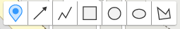
// 생성한 manager 객체를 toolbox의 DrawingManager로 설정한다
var toolbox = new kakao.maps.drawing.Toolbox({drawingManager: manager});
// 지도에 toolbox를 표시한다
map.addControl(toolbox.getElement(), kakao.maps.ControlPosition.TOP);Parameters
optionsObjectdrawingManagerDrawingManager : 그리기 모드를 가져올 DrawingManager 객체
Methods
getElement()
툴박스 엘리먼트를 반환한다. 지도 위에 툴박스를 표시해야 할 때 사용한다.
// 지도에 toolbox를 표시한다
map.addControl(toolbox.getElement(), kakao.maps.ControlPosition.TOP);MouseEvent
drawing.DrawingManager에 마우스와 관련된 이벤트(drawstart, draw, drawend, drawnext)에 등록한 이벤트 핸들러로 넘겨받는 인자
직접 생성할 수는 없으며 이벤트 핸들러에서 내부적으로 생성된 객체를 parameter로 받아 사용한다.
Properties
overlayType
그리기 요소
manager.addListener('drawstart', function(mouseEvent) {
console.log('drawstart', mouseEvent.overlayType);
});type
coords
그리기 요소의 지도 좌표
manager.addListener('drawstart', function(mouseEvent) {
console.log('drawstart', mouseEvent.coords);
});type
point
그리기 요소의 화면 좌표
manager.addListener('drawstart', function(mouseEvent) {
console.log('drawstart', mouseEvent.point);
});type
target
그리기 요소의 인스턴스. drawend 이벤트에서만 존재한다.
manager.addListener('drawend', function(mouseEvent) {
console.log('drawend', mouseEvent.target);
});type
- Object
load Static Methods
v3 스크립트를 동적으로 로드하기위해 사용한다.
스크립트의 로딩이 끝나기 전에 v3의 객체에 접근하려고 하면 에러가 발생하기 때문에
로딩이 끝나는 시점에 콜백을 통해 객체에 접근할 수 있도록 해 준다.
비동기 통신으로 페이지에 v3를 동적으로 삽입할 경우에 주로 사용된다.
v3 로딩 스크립트 주소에 파라메터로 autoload=false 를 지정해 주어야 한다.
Static Methods
kakao.maps.load(callback)
<script type="text/javascript" src="http://dapi.kakao.com/v2/maps/sdk.js?autoload=false"></script>
<script type="text/javascript">
kakao.maps.load(function() {
// v3가 모두 로드된 후, 이 콜백 함수가 실행됩니다.
var map = new kakao.maps.Map(node, options);
});
</script>Parameters
callbackFunction
disableHD Static Methods
고해상도 기기에서 HD 타일을 기본 타일로 사용하지 않도록 한다.
모바일용 로드뷰도 고화질이 아닌 일반화질로 노출된다.
반드시 Map 혹은 Roadview 객체를 선언하기 전에 호출해야 한다.
Static Methods
kakao.maps.disableHD()
kakao.maps.disableHD();StrokeStyles
지도 위에 올라가는 각종 도형의 선 스타일을 의미한다.
스타일은 패턴에 따라 11종류가 있으며 그 값은 문자열로 지정한다.
Constants
solidshortdashshortdotshortdashdotshortdashdotdotdotdashdashdotlongdashlongdashdotlongdashdotdot
위 값들은 지도에서 아래처럼 표현된다.
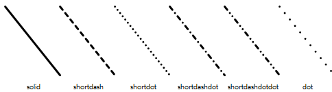
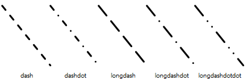
옵션에서 strokeStyle 에 문자열 형태로 지정하여 적용한다.
var circle = new kakao.maps.Circle({
map: map,
center : new kakao.maps.LatLng(33.450701, 126.570667),
radius: 50,
strokeWeight: 2,
strokeColor: '#FF00FF',
strokeOpacity: 0.8,
strokeStyle: 'dash' // 이와 같이 문자열로 작성한다.
});CategoryCode
services 라이브러리의 categorySearch 에서 사용하는 코드 목록이다.
Constant
MT1대형마트CS2편의점PS3어린이집, 유치원SC4학교AC5학원PK6주차장OL7주유소, 충전소SW8지하철역BK9은행CT1문화시설AG2중개업소PO3공공기관AT4관광명소AD5숙박FD6음식점CE7카페HP8병원PM9약국
categorySearch 의 첫 번째 인자에 문자열 형태로 지정하여 적용한다.
var places = new kakao.maps.services.Places();
var callback = function(status, result, pagination) {
if (status === kakao.maps.services.Status.OK) {
alert("검색된 음식점의 갯수는 " + result.places.length + "개 입니다.");
}
};
places.categorySearch('FD6', callback, {
location: new kakao.maps.LatLng(33.450701, 126.570667)
});